Manual do SimuladorRemap
Este manual explica todas as funções do simulador. Use-o para calibrar ECUs no dinamômetro virtual, treinar com cenários e avaliar uma turma.
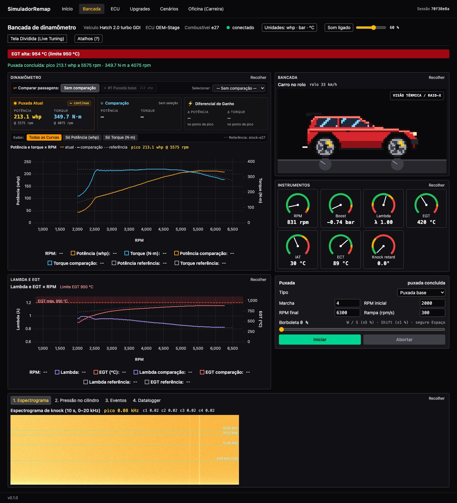
O sistema
TodosO SimuladorRemap é um simulador de calibração de ECU. O motor é um modelo físico. A ECU tem tabelas e estratégias editáveis. O dinamômetro mede o resultado. Um motor pode quebrar, e o sistema explica a causa.
O ciclo de trabalho normal é:
Áreas da aplicação
| Menu | Função | Capítulo |
|---|---|---|
| Início | Cria uma sessão. Escolha o carro, a ECU, o cenário e as peças. | 2 |
| Bancada | Executa puxadas e mostra os instrumentos e os gráficos. | 3 |
| ECU | Edita as tabelas e as estratégias da calibração. | 4 a 8 |
| Upgrades | Instala peças no carro da sessão ativa. | 9 |
| Cenários | Lista os exercícios, os perfis de jogador e o painel do instrutor. | 10 e 11 |
| Oficina (Carreira) | Modo carreira com ordens de serviço, saldo e reputação. | 12 |
Os menus Bancada, ECU e Upgrades só aparecem com uma sessão ativa. O canto superior direito mostra Sessão e os 8 primeiros caracteres do identificador.
Abrir a aplicação
- Peça ao responsável da estação para ligar o servidor. O comando é
make up. - Abra o navegador no endereço
http://127.0.0.1:8000. - Aguarde a mensagem A iniciar o simulador desaparecer.
- Se aparecer Servidor indisponível, clique em Tentar de novo.
Iniciar uma sessão
Todos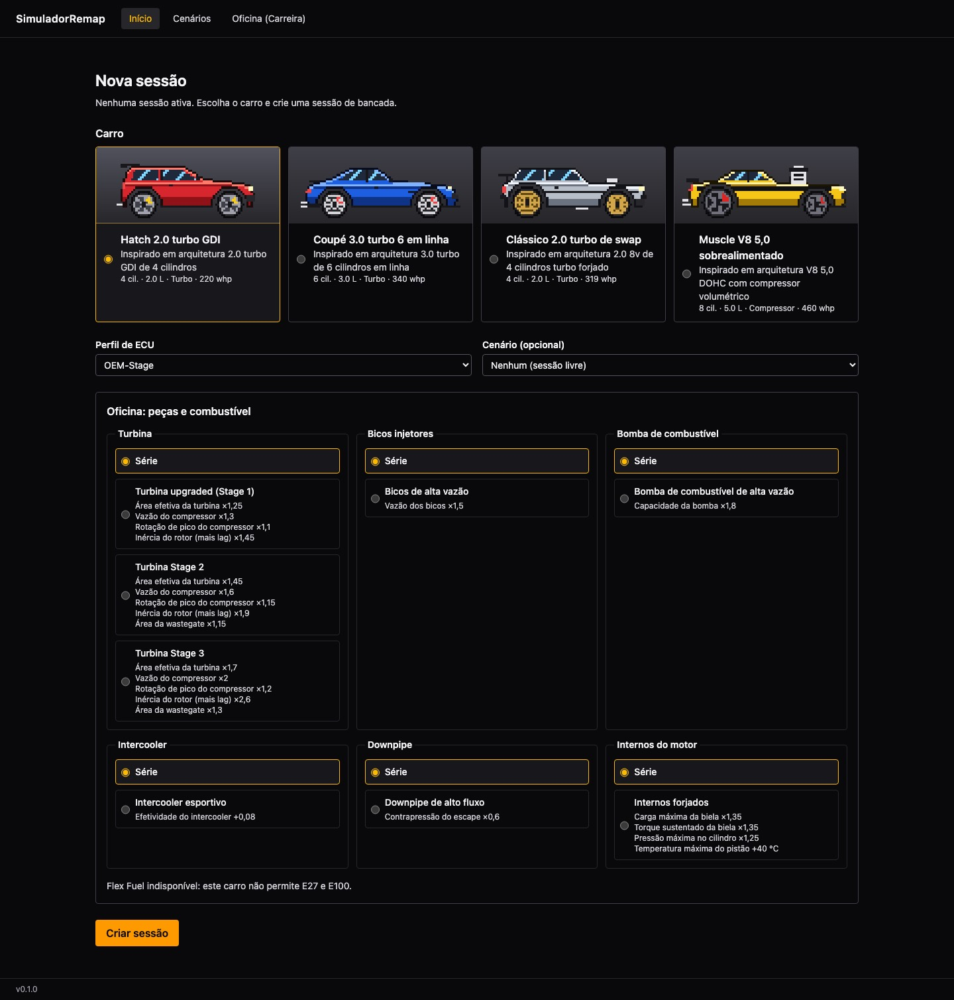
Procedimento
- Clique em Início.
- Em Carro, clique no cartão de um carro.
- Em Perfil de ECU, selecione a ECU. Para uma sessão normal, selecione OEM-Stage.
- Em Cenário (opcional), deixe Nenhum (sessão livre). Para um exercício, selecione o cenário.
- Em Oficina: peças e combustível, selecione as peças. Deixe Série para o carro original.
- Clique em Criar sessão. Com um cenário, o botão diz Iniciar tentativa.
- A aplicação abre a Bancada.
Os carros
| Carro | Motor | Potência de série | Marchas | Combustíveis | Uso típico |
|---|---|---|---|---|---|
| Hatch 2.0 turbo GDI | 4 cil. · 2,0 L · turbo · injeção direta | 220 whp | 6 | E27, Podium, E0 | Stage 1 e Stage 2 na ECU de série. Cenários de diagnóstico. |
| Coupé 3.0 turbo 6 em linha | 6 cil. · 3,0 L · turbo | 340 whp | 8 | E27, Podium, E0 | Carro preparado. Desafio de 400 whp. |
| Clássico 2.0 turbo de swap | 4 cil. · 2,0 L · turbo · internos forjados | 319 whp | 5 | E100, E27, Podium | Troca para ECU standalone. Único carro com Flex Fuel. |
| Muscle V8 5,0 sobrealimentado | 8 cil. · 5,0 L · compressor volumétrico | 460 whp | 6 | E27, Podium, E0 | V8 com compressor. |
Limite de sessões
A estação aceita 1 sessão ativa por padrão. Se já existe uma sessão ativa, a tela mostra o erro SIM_CAPACITY_EXCEEDED.
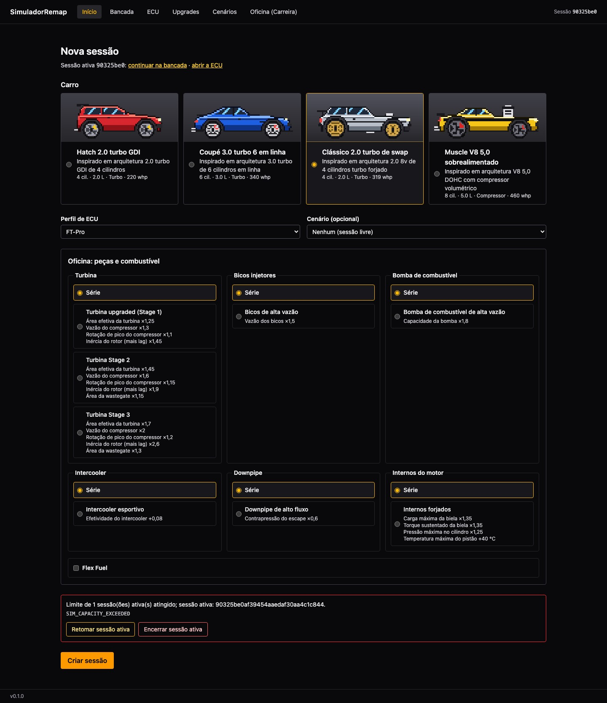
- Para continuar o trabalho anterior, clique em Retomar sessão ativa.
- Para começar outra sessão, clique em Encerrar sessão ativa. Depois, clique em Criar sessão.
Grave uma versão da calibração antes de encerrar uma sessão. Consulte 4.6.
Com um cenário selecionado, o carro entra de série. O cenário define o perfil de ECU, o combustível e a calibração. As peças da oficina só valem em sessões livres.
Bancada de dinamômetro
TodosA bancada executa puxadas e mostra os dados do motor em tempo real. O cabeçalho mostra o veículo, a ECU, o combustível e o estado da ligação (conectado).
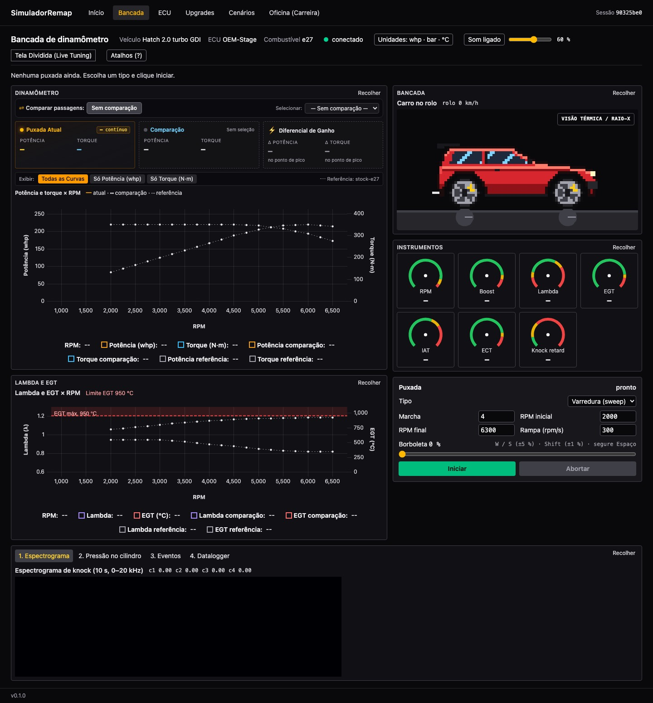
3.1Executar uma puxada
- No painel Puxada, selecione o Tipo.
- Preencha a Marcha, a RPM inicial, a RPM final e a Rampa (rpm/s).
- Clique em Iniciar. Também pode pressionar Enter com o foco nos campos.
- Aguarde o estado puxada concluída.
- Leia o resumo verde. Exemplo: Puxada concluída: pico 213.1 whp a 5575 rpm.
- Para parar a puxada, clique em Abortar ou pressione Esc.
| Tipo | O que faz | Parâmetros (padrão; limites) |
|---|---|---|
| Puxada base | Mede o motor como está. Serve de referência para comparar. | Marcha (4; 1–10), RPM inicial (2000; 1000–10000), RPM final (corte − 200; 1500–12000), Rampa (300; 50–1000 rpm/s) |
| Varredura (sweep) | Acelera a plena carga da RPM inicial até a RPM final. É o tipo padrão. | Os mesmos da puxada base. |
| Múltiplas puxadas | Repete a varredura várias vezes. Mede a repetibilidade e o aquecimento. | Os mesmos, mais Puxadas (3; 2–10). |
| Carga estacionária | Mantém o motor numa RPM fixa durante 5 s. Use para afinar uma célula. | Marcha e RPM alvo (3500; 500–12000). A borboleta define a carga. |
Borboleta
O controle Borboleta define a abertura do acelerador fora de uma puxada.
- Pressione W ou S para mudar ±5 %. Com Shift, a mudança é ±1 %.
- Segure Espaço para um acelerador com mola. O pedal sobe até 100 %. Solte para voltar a 0 %.
- Com o foco no controle, use também ← → Home End.
A borboleta fica bloqueada durante uma puxada. Os campos do painel também ficam bloqueados.
3.2Instrumentos
O painel Instrumentos tem 7 mostradores. Cada um tem uma zona verde, amarela e vermelha.
| Mostrador | Mede | Verde | Amarelo | Vermelho |
|---|---|---|---|---|
| RPM | Rotação do motor | até corte − 500 | até o corte | acima do corte |
| Boost | Pressão do turbo ou do compressor | até 90 % do máximo | até o máximo | acima do máximo |
| Lambda | Mistura ar/combustível (escala 0,6–1,3) | 0,75–1,02 | 0,70–0,75 e 1,02–1,10 | abaixo de 0,70 e acima de 1,10 |
| EGT | Temperatura dos gases de escape | até máx. − 50 °C | até o máximo | acima do máximo |
| IAT | Temperatura do ar de admissão | até 50 °C | até 65 °C | acima de 65 °C |
| ECT | Temperatura do motor | até 105 °C | até 112 °C | acima de 112 °C |
| Knock retard | Atraso de ignição aplicado por detonação | até 2° | até 5° | acima de 5° |
O boost máximo do mostrador é 2,0 bar no turbo e 1,0 bar no compressor.
3.3Carro no rolo e visão térmica
O painel Bancada mostra o carro no rolo e a velocidade do rolo. Clique em Visão Térmica / Raio-X ou pressione T. O coletor e a turbina mudam de cor conforme a EGT.
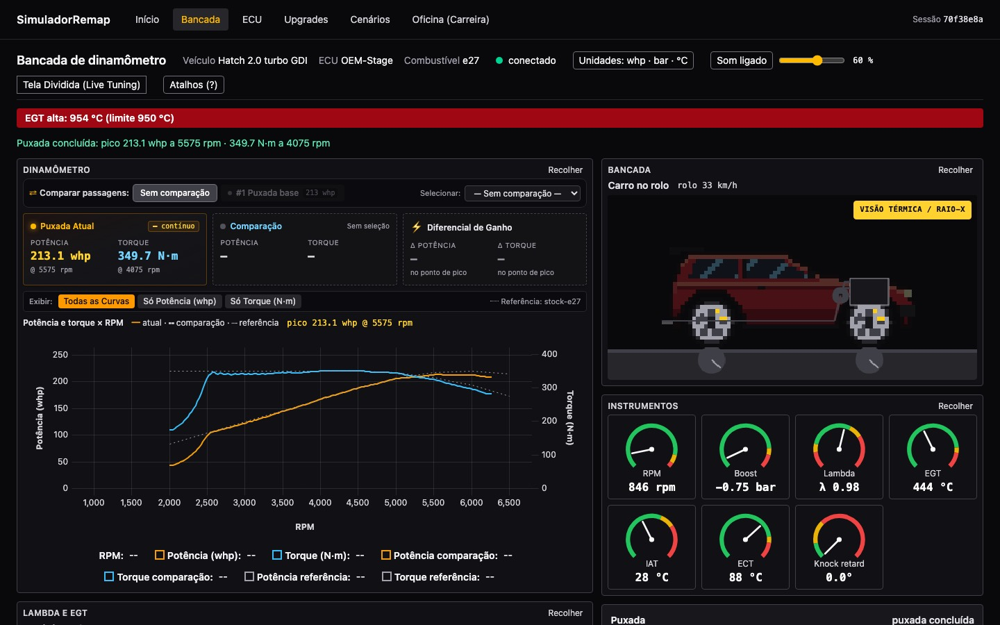
3.4Gráfico do dinamômetro e comparação
O gráfico mostra potência e torque por RPM. A linha contínua é a puxada atual. A linha tracejada é a comparação. A linha pontilhada é a curva de referência de série.
- Puxada Atual mostra o pico de potência e de torque.
- Comparação mostra os picos da puxada escolhida para comparar.
- Diferencial de Ganho mostra Δ potência e Δ torque no ponto de pico.
- Exibir: filtra as curvas: Todas as Curvas, Só Potência ou Só Torque.
- Execute uma puxada base.
- Edite a calibração e execute outra puxada.
- Em Comparar passagens:, clique na etiqueta da puxada anterior. Também pode usar Selecionar:.
- Leia o ganho em Diferencial de Ganho.
- Para remover a comparação, clique em Sem comparação.
O gráfico Lambda e EGT mostra a mistura e a EGT por RPM. A faixa vermelha marca o limite de EGT.
3.5Abas inferiores
Pressione 1 a 4 para abrir uma aba.
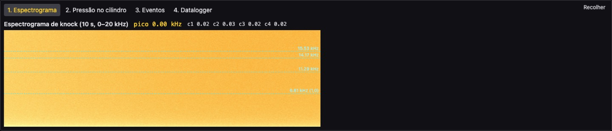
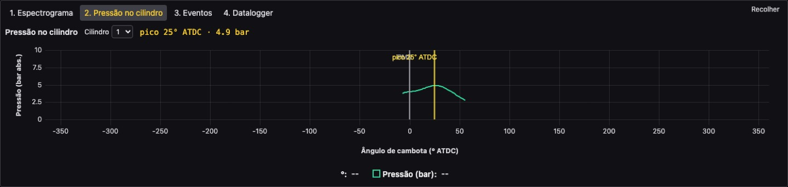
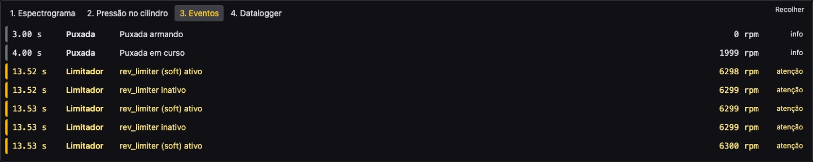
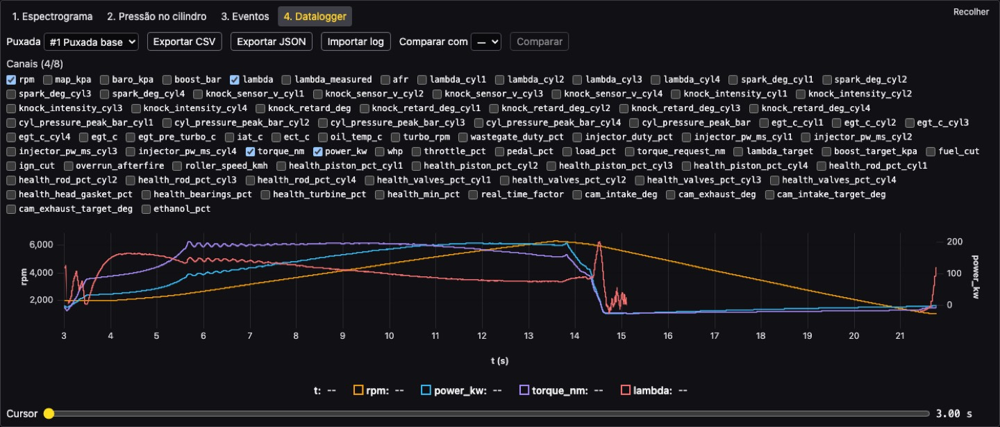
Usar o datalogger
- Em Puxada, selecione a puxada.
- Em Canais, marque até 8 canais. O padrão é
rpm,power_kw,torque_nmelambda. - Mova o Cursor para ler os valores num instante.
- Para comparar duas puxadas, selecione em Comparar com e clique em Comparar.
- Para guardar os dados, clique em Exportar CSV ou Exportar JSON.
- Para abrir um log JSON guardado, clique em Importar log.
3.6Alarmes
Uma faixa vermelha no topo mostra os alarmes.
| Alarme | Causa | Ação recomendada |
|---|---|---|
| Knock severo, cilindro N, X° de retardo | Detonação forte num cilindro. | Retire avanço ou pressão nas células de carga alta. |
| … ativo (N rpm) | Um limitador ligou: rotação, two-step, sobrepressão, antilag ou overrun. | Confira os limites da estratégia correspondente. |
| EGT alta: X (limite Y) | A EGT passou o limite. Apaga 20 °C abaixo do limite. | Enriqueça o lambda alvo ou baixe a pressão. |
| Dano: modo em componente | Dano parcial num componente. | Pare a puxada. Corrija a calibração. |
| Motor destruído: modo | Falha catastrófica. | Leia o laudo forense. Restaure o motor. |
3.7Motor destruído e laudo forense
Um motor pode quebrar por knock, pré-ignição, EGT excessiva, biela, pistão ou fusão da turbina. Quando isso acontece, a tela mostra Motor destruído e os instrumentos param.
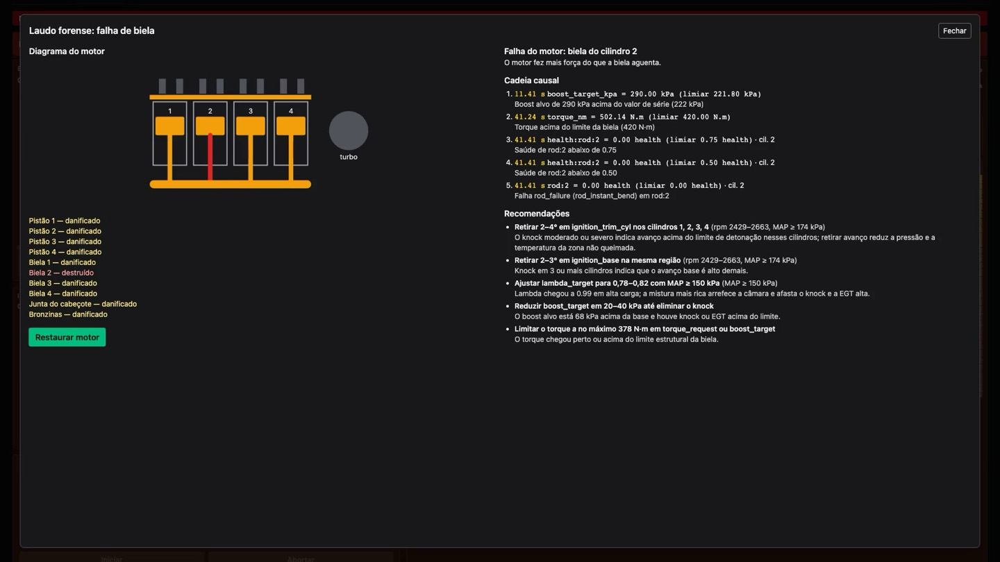
- Clique em Ver laudo.
- Leia o Diagrama do motor. Cada componente tem o estado destruído, danificado ou íntegro.
- Leia a Cadeia causal. Cada linha mostra o instante, a variável, o valor e o limiar.
- Leia as Recomendações. Aplique-as na ECU.
- Clique em Restaurar motor.
Numa tentativa de cenário, cada restauração do motor fica registada. Na carreira, um motor quebrado custa dinheiro e reputação. Observe os alarmes antes da falha.
3.8Unidades, som e diagnóstico
- Unidades (U): selecione a potência em whp, cv ou kW, e o boost em bar ou psi. A temperatura fica em °C. O torque fica em N·m.
- Som: clique em Ativar som na primeira vez. Depois, use Som ligado / Som desligado (M) e o Volume. O som do motor segue a rotação, a carga e as falhas.
- Diagnóstico (D): mostra FPS, superfície gráfica, perda de quadros e reconexões. Use-o se a tela ficar lenta.
- Recolher / Expandir: esconde ou mostra um painel. O navegador guarda a escolha.
3.9Tela Dividida (Live Tuning)
Clique em Tela Dividida (Live Tuning) ou pressione L. A bancada fica de um lado. O editor de tabela fica do outro. A célula onde o motor opera pisca. As alterações vão para a sessão de imediato.
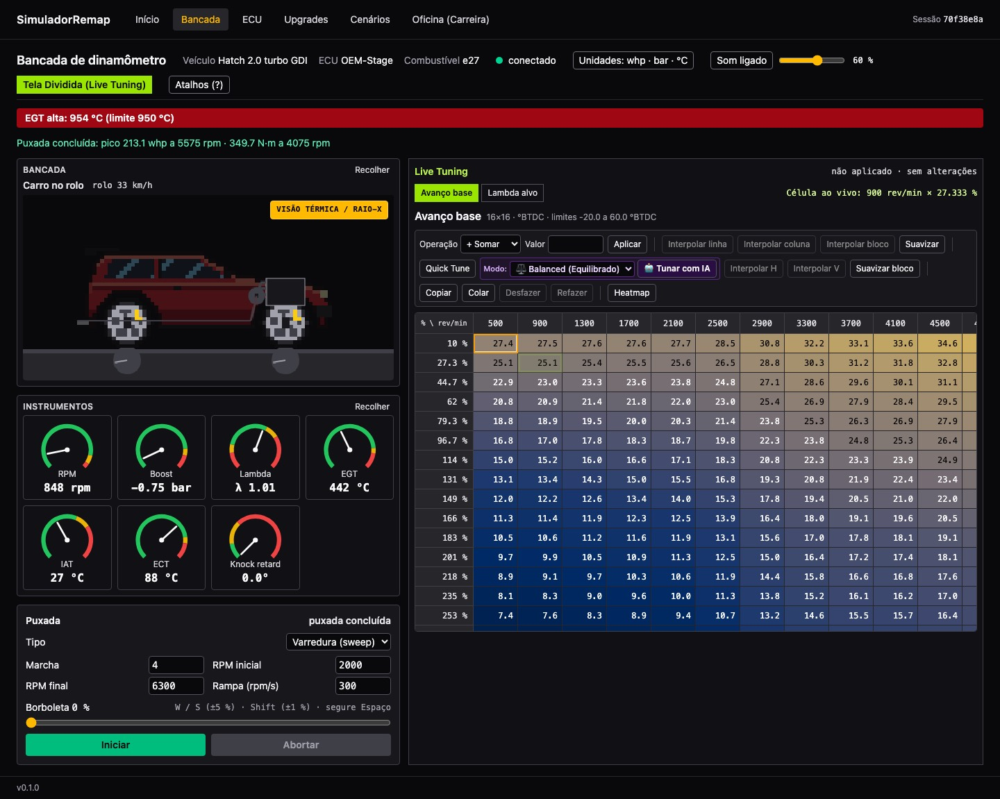
Durante uma puxada, só as tabelas "live-tunable" aceitam edição. As outras ficam bloqueadas até ao fim da puxada.
3.10Atalhos da bancada
Pressione ? ou clique em Atalhos (?) para ver a lista. Os atalhos não funcionam enquanto escreve num campo.
| Tecla | Ação |
|---|---|
| Enter | Iniciar puxada (foco nos campos da puxada) |
| Esc | Abortar a puxada ativa. Fechar um diálogo. |
| W / S ou ↑ / ↓ | Borboleta ±5 % (com Shift: ±1 %) |
| Espaço (segurar) | Acelerador com mola |
| M | Silenciar ou reativar o som |
| U | Abrir o menu de unidades |
| 1–4 | Abrir uma aba inferior |
| D | Painel de diagnóstico |
| L | Tela Dividida (Live Tuning) |
| T | Visão Térmica / Raio-X |
| ? | Lista de atalhos |
Workspace da ECU
TodosO workspace edita a calibração da ECU instalada. Clique em ECU no menu.
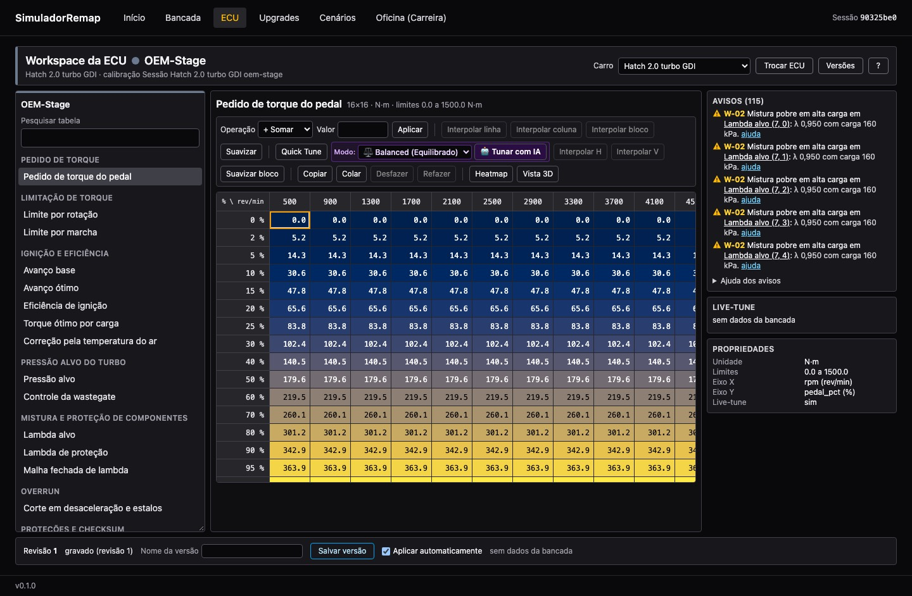
4.1Partes da tela
- Cabeçalho: perfil de ECU, carro e nome da calibração. Botões Carro, Trocar ECU, Versões e ?.
- Navegador (esquerda): lista as tabelas e as estratégias por secção. Escreva em Pesquisar tabela para filtrar. Um item cinzento com não disponível nesta calibração não existe nesta calibração.
- Editor (centro): a tabela, a estratégia ou o assistente escolhido.
- Avisos: problemas prováveis na calibração. Consulte 4.5.
- Live-tune: indica que tabelas aceitam edição durante a puxada.
- Propriedades: unidade, limites, eixos e se a tabela é live-tune.
- Barra de estado: revisão, estado da gravação, Nome da versão, Salvar versão, Aplicar automaticamente e leituras de RPM, carga e λ.
Uma calibração de série é só de leitura. Se a faixa Calibração de série (somente leitura) aparecer, clique em Clonar e editar. A cópia fica aplicada à sessão e a edição fica livre.
O seletor Carro cria uma sessão nova com o carro escolhido e a ECU de série.
4.2Editar uma tabela
- No navegador, clique numa tabela.
- Selecione células. Clique numa célula. Arraste ou use Shift + clique para uma área. Clique no cabeçalho de uma linha ou coluna para a selecionar inteira.
- Em Operação, selecione a operação.
- Escreva o número em Valor. Use vírgula ou ponto.
- Clique em Aplicar.
- Para editar uma só célula, escreva um dígito ou pressione Enter. Pressione Enter para confirmar. Pressione Esc para cancelar.
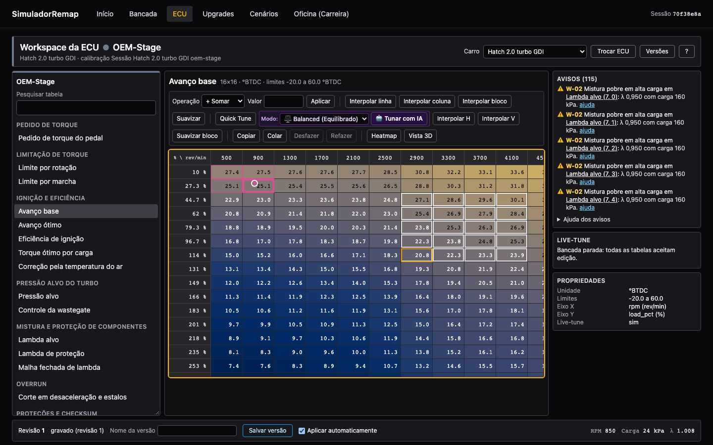
| Ferramenta | Tecla | O que faz |
|---|---|---|
| = Definir | = | Substitui o valor das células pelo número. |
| + Somar / − Subtrair | + − | Soma ou subtrai o número. É a operação padrão. |
| % Ajustar | * | Multiplica por (1 + número/100). Exemplo: 5 dá +5 %. |
| Interpolar linha / coluna | I | Cria uma rampa linear entre a primeira e a última célula, conforme os eixos. |
| Interpolar bloco | Shift+I | Interpolação bilinear a partir dos 4 cantos do bloco. |
| Interpolar H / Interpolar V | H V | Interpolação horizontal ou vertical da seleção. |
| Suavizar / Suavizar bloco | S B | Filtro 3×3 que reduz degraus entre células vizinhas. |
| Quick Tune | Q | Corrige a tabela VE com o lambda medido. Consulte 4.3. |
| 🤖 Tunar com IA | — | Ajuste automático pela LAYA.ai. Consulte 4.4. |
| Copiar / Colar | Ctrl+C / V | Copia e cola em TSV. Funciona com folhas de cálculo. |
| Desfazer / Refazer | Ctrl+Z / Ctrl+Shift+Z | Desfaz ou refaz a última alteração. Ctrl+Y também refaz. |
| Heatmap | — | Liga ou desliga as cores por valor. |
| Exibir em AFR / em λ | — | Só nas tabelas de lambda. Mostra em AFR com o combustível ativo. |
| Vista 3D | F3 | Mostra a tabela como superfície. Arraste para orbitar. Use a roda para zoom. Duplo clique para repor. |
Os resultados ficam sempre dentro dos limites da tabela. O cabeçalho do editor mostra o tamanho, a unidade e os limites.
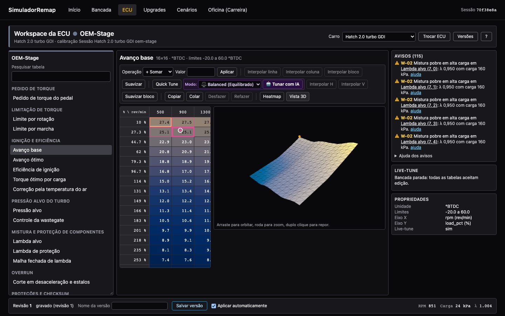
4.3Quick Tune
O Quick Tune corrige a eficiência volumétrica (VE) com a fórmula VE × λ medido / λ alvo. A correção máxima é ±25 % por célula.
- Execute uma puxada ou uma carga estacionária. A bancada precisa de lambda medido.
- Abra a tabela VE do perfil.
- Selecione as células. Com uma só célula, o Quick Tune usa a célula onde o motor opera.
- Clique em Quick Tune ou pressione Q.
O Quick Tune só atua na tabela VE. No OEM-Stage a VE está escondida. Por isso, a mensagem Quick Tune só atua na tabela VE aparece nesse perfil.
4.4Tunar com IA (LAYA.ai)
A LAYA.ai propõe um ajuste para as tabelas principais da calibração. Ela analisa VE, injeção, lambda alvo, avanço, pressão alvo e torque, se a calibração os tiver.
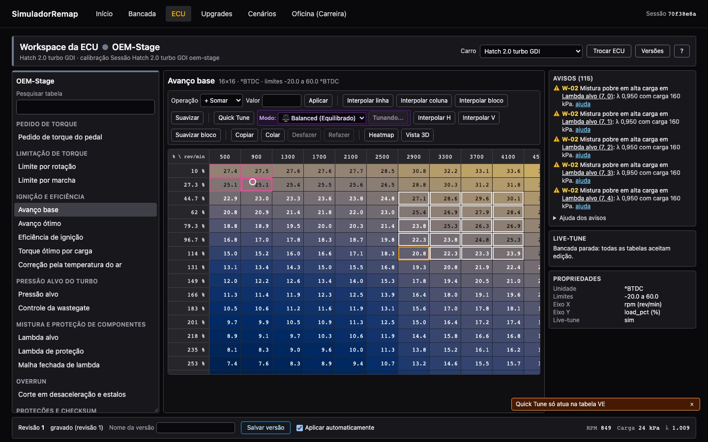
- Em Modo, selecione o perfil de tunagem.
- Clique em 🤖 Tunar com IA.
- Leia a mensagem. Exemplo: 🤖 LAYA.ai: … (+X% torque estimado).
- Execute uma puxada para medir o resultado.
- Compare com a puxada anterior.
| Modo | Objetivo |
|---|---|
| 🛡️ Safe (Seguro) | Prioriza a confiabilidade. Menos EGT e mais margem contra knock. |
| ⚖️ Balanced (Equilibrado) | Equilibra ganho de torque e segurança. É o modo padrão. |
| ⚡ Race (Máx. Potência) | Busca o limite seguro de avanço e pressão. |
A IA altera várias tabelas ao mesmo tempo, não só a tabela aberta. Se a mensagem aparecer como aviso, a IA detetou risco. Confira lambda, EGT e knock na próxima puxada.
A IA não funciona numa calibração de série. Clone-a primeiro. Numa ECU standalone, complete a configuração base antes.
4.5Avisos W-01 a W-06
O painel Avisos indica problemas prováveis. Os avisos não impedem a gravação. Clique na ligação de uma célula para a selecionar. Clique em ajuda para ler a explicação.
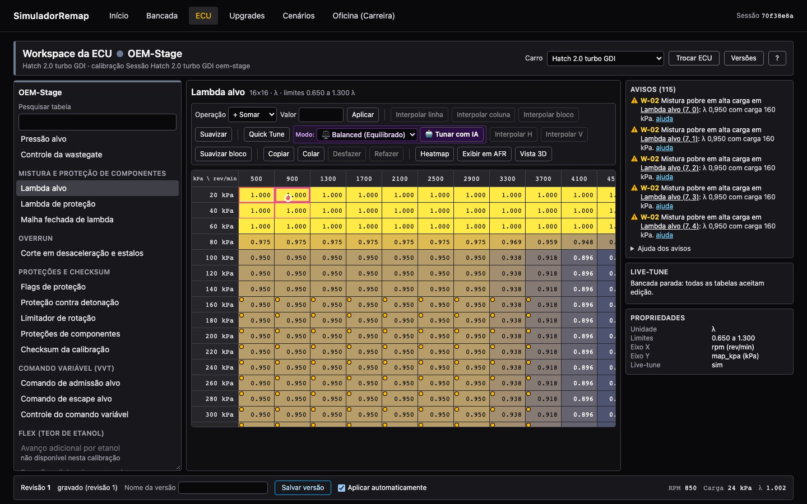
| Código | Título | Quando aparece |
|---|---|---|
| W-01 | Avanço acima do MBT estimado | Uma célula de avanço passa o MBT estimado em mais de 2°. |
| W-02 | Mistura pobre em alta carga | Lambda alvo acima de 0,90 com carga ≥ 80 % ou MAP ≥ 152 kPa. |
| W-03 | Boost acima da capacidade | A pressão alvo passa a capacidade do turbo. |
| W-04 | Limitador acima da rotação segura | O corte de rotação passa a rotação máxima segura do motor. |
| W-05 | Pops & bangs agressivos | Avanço dos pops abaixo de −20° ou atraso de corte acima de 1,5 s. |
| W-06 | Degrau abrupto entre células | Células vizinhas diferem mais de 15 % (VE) ou 6° (avanço). |
4.6Gravar, aplicar e versões
Cada alteração grava uma revisão nova. Com Aplicar automaticamente marcado, cada revisão vai para a sessão. Este é o padrão.
- Para guardar um marco, escreva um nome em Nome da versão. O máximo é 60 caracteres.
- Clique em Salvar versão ou pressione Ctrl+S.
- Sem aplicação automática, clique em Aplicar à sessão (Ctrl+Enter). Depois, clique em Confirmar.
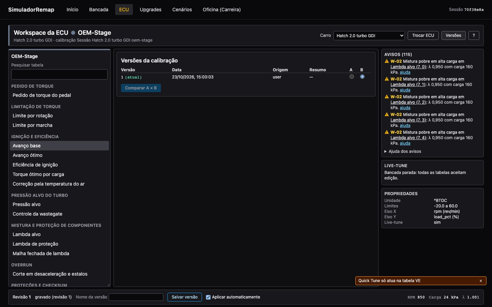
Comparar e reverter
- Clique em Versões.
- Marque uma versão na coluna A e outra na coluna B.
- Clique em Comparar A × B. A lista mostra cada célula alterada como valor antigo → valor novo.
- Para voltar atrás, clique em Reverter para N. O sistema cria uma versão nova com o conteúdo de N.
- Clique em Aplicar à sessão.
Se aparecer Conflito de versão, outra janela alterou a calibração. Clique em Recarregar para manter a versão gravada. Clique em Sobrescrever com as minhas alterações só se tiver a certeza.
4.7Correções por cilindro
Nas ECUs standalone, as tabelas Combustível cil. N e Avanço cil. N corrigem um cilindro. O painel Correções por cilindro aceita combustível ±25 % e ignição ±10°. Clique em Gravar correções.
4.8Atalhos do editor
| Tecla | Ação |
|---|---|
| Setas / Shift + setas | Mover ou estender a seleção |
| Tab / Shift+Tab | Célula seguinte ou anterior na linha |
| Home / End | Início ou fim da linha (com Ctrl: da tabela) |
| PageUp / PageDown | Subir ou descer uma página |
| Ctrl+A | Selecionar a tabela inteira |
| Enter, F2 ou um dígito | Editar a célula ativa |
| = + − * | Definir, somar, subtrair, ajustar % |
| I / Shift+I | Interpolar linha ou coluna / bloco |
| S B H V Q | Suavizar, suavizar bloco, interpolar H, interpolar V, Quick Tune |
| Ctrl+C / V | Copiar / colar TSV |
| Ctrl+Z / Ctrl+Shift+Z | Desfazer / refazer |
| Ctrl+S | Salvar versão |
| Ctrl+Enter | Aplicar à sessão |
| F3 | Vista 3D |
| Esc | Reduzir a seleção à célula ativa. Fechar um diálogo. |
| ? | Lista de atalhos |
No macOS, use Cmd no lugar de Ctrl.
Perfis de ECU: diferenças
TodosO simulador tem 4 perfis de ECU. Um é a ECU original (OEM). Três são ECUs programáveis (standalone). Os perfis são genéricos e inspirados em famílias reais. Os 4 carros aceitam os 4 perfis.
OEM-Stage
ECU moderna de fábrica com estrutura de torque.
- O motorista pede torque. A ECU calcula a carga, a pressão e o avanço.
- Sem two-step, antilag e powershift.
- Checksum e modo de emergência.
- Uso: Stage 1 e Stage 2.
FT-Pro
Injeção programável de arrancada.
- Mapa principal em milissegundos (ms) ou VE.
- Two-step, powershift e boost por marcha.
- Antilag só por botão.
- Foco em etanol E100.
M1-Race
ECU de competição organizada por canais e funções.
- Só VE e lambda alvo.
- Modelo físico do bico injetor.
- Funções de competição exigem o pacote race.
- Unidades em kPa absoluto.
HT-Elite
ECU programável com VE e lambda alvo.
- Assistente de mapa base em primeiro lugar.
- Secção própria de correções por cilindro.
- Antilag por botão ou em rolamento.
- Mistura declarada em AFR.
5.1Tabela comparativa
| Característica | OEM-Stage | FT-Pro | M1-Race | HT-Elite |
|---|---|---|---|---|
| Tipo | OEM | Standalone | Standalone | Standalone |
| Como obter | Padrão da sessão | Trocar ECU | Trocar ECU | Trocar ECU |
| Modelo de combustível | Modelo de torque e ar da ECU | ms (padrão) ou VE | Só VE | Só VE |
| Tabela principal | VE de série (escondida) | Mapa principal (ms) / (VE) | Eficiência do motor | Tabela de VE |
| Eixo de carga | Carga relativa (%) | MAP (kPa) | MAP (kPa) | MAP (kPa) |
| Unidades (pressão · mistura · injeção) | bar rel. · λ · mg | bar rel. · λ · ms | kPa abs. · λ · VE % | kPa abs. · AFR · VE % |
| Tabelas de torque | Sim | Não | Não | Não |
| Configuração base | De fábrica, só leitura | Assistente de 6 passos | Passos na secção Canais | Assistente primeiro |
| Malha fechada, detonação, boost, limitador, overrun, failsafe, VVT | Sim | Sim | Sim | Sim |
| Two-step (largada) | Não | Sim | Pacote race | Sim |
| Antilag | Não | Só botão | Pacote race | Botão ou rolamento |
| Powershift | Não | Sim | Pacote race | Sim |
| Correções por cilindro | Não no navegador | Combustível e avanço | Combustível e avanço | Secção própria |
| Flex (teor de etanol) | Sim | Sim | Sim | Sim |
| Checksum | Sim (corrigido pela aplicação) | Não | Não | Não |
| Monitor de torque e modo de emergência | Sim | Não | Não | Não |
| Tamanho da grade | 16×16 | 12, 16 ou 20 | 12, 16 ou 20 | 12, 16 ou 20 |
| Particularidade | Caminho de torque, proteção de componentes | Troca ms ↔ VE | Temperatura de carga combinada (0,25), modelo do bico | Antilag em rolamento |
5.2OEM-Stage
A ECU OEM não usa um mapa de VE para injetar. Ela trabalha por torque. Em cada ciclo, a ECU faz isto:
- Lê o Pedido de torque do pedal.
- Limita o torque com o Limite por rotação, o Limite por marcha e as proteções.
- Soma o torque de atrito.
- Calcula a carga alvo com o Torque ótimo por carga e a Eficiência de ignição.
- Calcula a pressão do turbo com a Pressão alvo.
- Se sobra torque, atrasa a ignição a partir do Avanço ótimo (máximo 20°).
- Modo de emergência: se o torque estimado passa 1,10 × o limite durante 0,5 s, a ECU corta o torque para 50 % e corta o boost. O modo termina na próxima aplicação de calibração.
- Proteção de componentes: a ECU usa o lambda mais rico entre Lambda alvo e Lambda de proteção (por EGT).
- Validação: o Torque ótimo por carga tem de subir com a carga. A Eficiência de ignição não pode subir com o atraso. Se não, a aplicação recusa a calibração.
- Checksum: a aplicação corrige o checksum de forma automática.
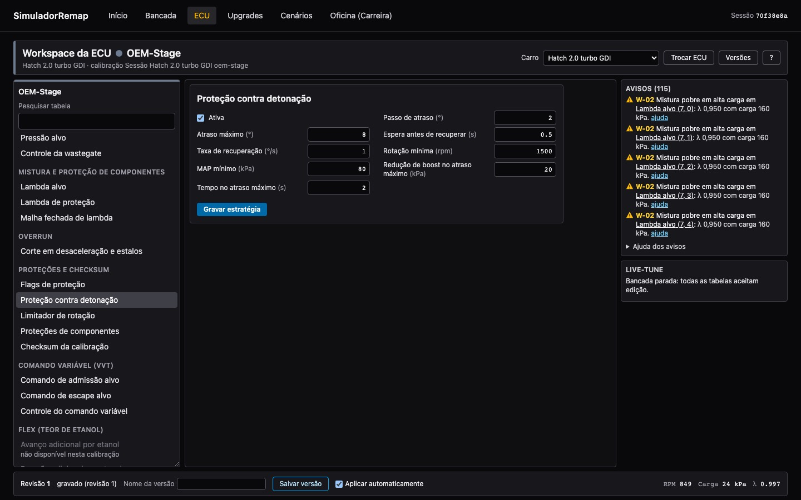
5.3FT-Pro
A FT-Pro é a ECU de arrancada. O mapa principal é o tempo de injeção em ms, por RPM e MAP. O nome da estratégia de boost é Boost por marcha. O antilag só aceita ativação por botão (Antilag por botão). A opção Rolante fica cinzenta.
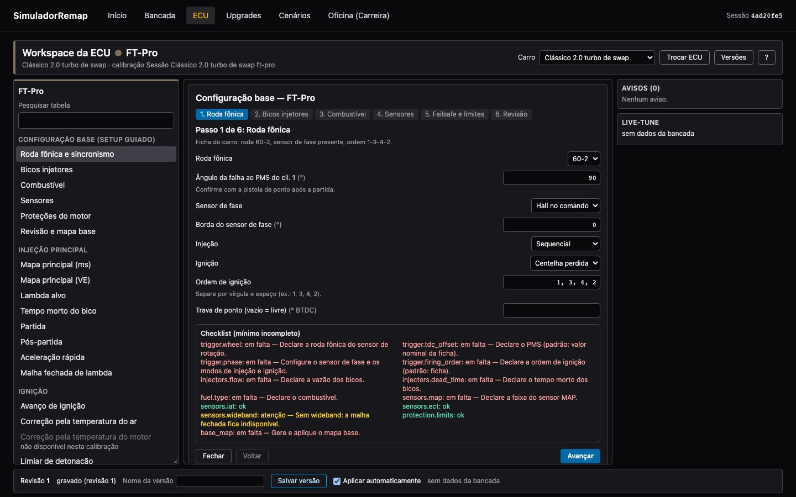
5.4M1-Race
A M1-Race organiza a calibração por canais e funções. Secções: Canais, Funções: combustível, Funções: ignição, Funções: sobrealimentação, Funções: competição, Modelo do bico e Proteções.
- A temperatura do ar usada é IAT + 0,25 × (ECT − IAT). Os outros perfis usam só a IAT.
- O Modelo do bico considera vazão, tempo morto, pulso curto e pressão diferencial.
- Controle de largada, Antilag e Troca sem levantar o pé têm a etiqueta (pacote race). Sem esse pacote, a gravação devolve Exige o pacote race deste perfil.
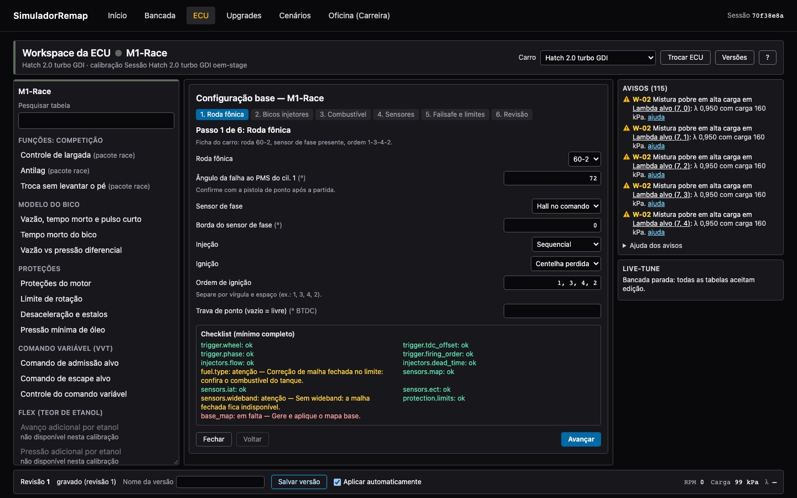
5.5HT-Elite
A HT-Elite coloca o Assistente de mapa base no topo do navegador. A tabela principal é a Tabela de VE. O antilag aceita botão e rolamento. É a única standalone sem restrição de estratégias.
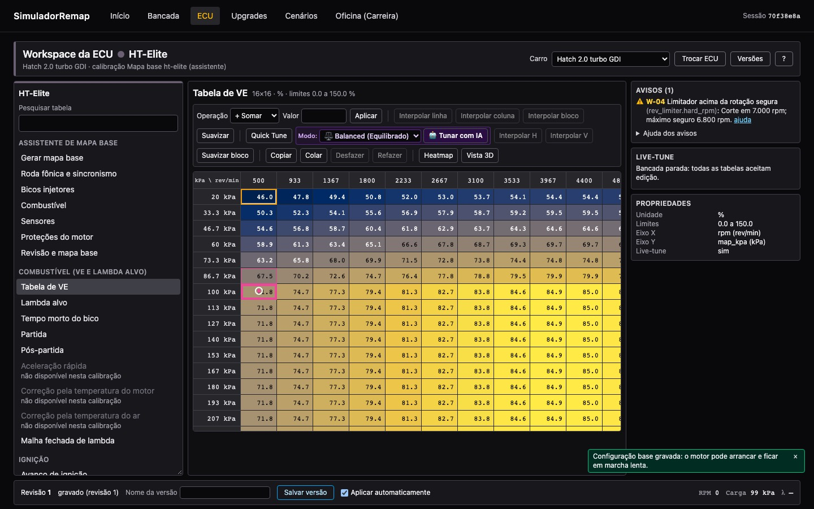
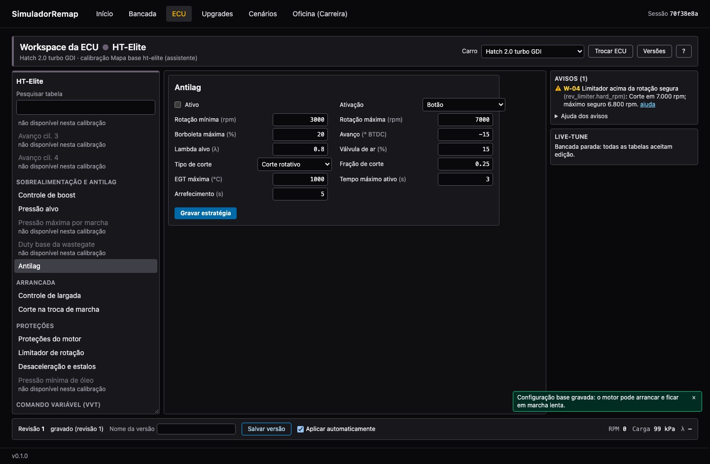
5.6Qual perfil escolher
| Objetivo | Perfil |
|---|---|
| Aprender remap de carro de rua (Stage 1, Stage 2, pops) | OEM-Stage |
| Aprender a primeira standalone, injeção em ms, arrancada com etanol | FT-Pro |
| Aprender calibração por VE e modelo físico do bico | M1-Race |
| Gerar um mapa base guiado e afinar cilindro a cilindro | HT-Elite |
Trocar ECU e configuração base
Todos6.1Trocar para uma ECU standalone
- Confirme que nenhuma puxada está em curso. Durante uma puxada, o botão fica bloqueado.
- No workspace da ECU, clique em Trocar ECU.
- Em Perfil de destino, selecione FT-Pro, M1-Race ou HT-Elite.
- Para a M1-Race, selecione o Pacote:
baseourace. - Saindo do OEM, marque Guardar um snapshot da calibração OEM antes da troca. Sem esta marca, o botão fica bloqueado.
- Clique em Trocar e abrir o assistente.
- Complete a configuração base (6.2).
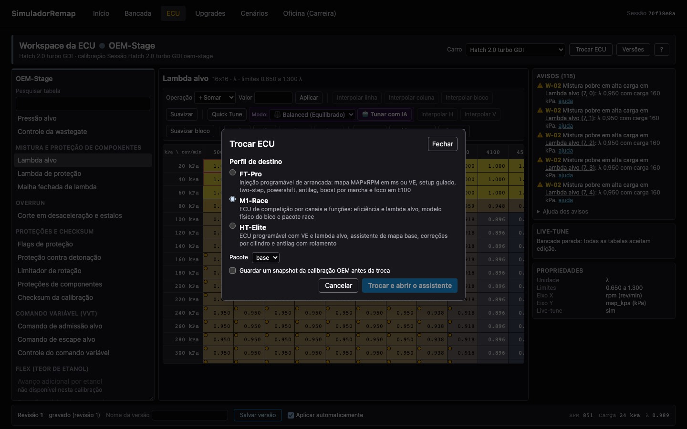
Depois da troca, a bancada recusa puxadas até a checklist mínima ficar completa. O erro é ECU_SETUP_INCOMPLETE.
A primeira troca preenche a configuração com a ficha do carro: roda fônica, ordem de ignição, bicos, combustível e MAP. Confira cada valor. Entre duas standalones, a configuração base passa para a nova ECU.
6.2Assistente de configuração base
O assistente tem 6 passos. Clique em Avançar para validar cada passo. Clique em Voltar para corrigir. Os dados ficam guardados.
Passo 1: Roda fônica
| Campo | Significado | Valores |
|---|---|---|
| Roda fônica | Padrão de dentes do sensor de rotação. | 60-2, 36-1, 36-2, 24-1, 12-1, 4-0 |
| Ângulo da falha ao PMS do cil. 1 | Ângulo entre a falha de dentes e o PMS do cilindro 1. Confirme com a pistola de ponto. | 0–359,9° |
| Sensor de fase | Sensor no comando de válvulas. | Sem sensor, Hall no comando |
| Borda do sensor de fase | Ângulo do sinal de fase. | 0–719,9° |
| Injeção | Modo de disparo dos bicos. | Sequencial, Semissequencial, Em grupo |
| Ignição | Modo de disparo das bobinas. | Sequencial, Centelha perdida |
| Ordem de ignição | Sequência de disparo. Separe com vírgula e espaço. | Ex.: 1, 3, 4, 2 |
| Trava de ponto | Fixa o avanço para conferir com a pistola. Vazio = livre. | −5 a 30° BTDC |
O modo sequencial exige sensor de fase. Uma ordem de ignição errada é recusada.
Passo 2: Bicos injetores
- Vazão do bico (cc/min) e Pressão de referência (kPa, 200–600).
- Tensões do tempo morto (V, em ordem crescente) e Tempo morto (ms, 0–5). As duas listas têm o mesmo tamanho.
- Regulador: Referenciado ao MAP ou Linha fixa. Pressão da linha (kPa, 200–800).
Passo 3: Combustível
- Combustível: E0, E27, E100 ou alta octanagem.
- AFR estequiométrico: E0 14,7 · E27 13,2 · E100 9,0. Um valor errado desloca toda a mistura.
- Densidade (g/cc, 0,68–0,82).
Passo 4: Sensores
- MAP a 0,5 V e MAP a 4,5 V: faixa do sensor de pressão.
- Curva do sensor de ar e Curva do sensor do motor: NTC A, B ou C.
- Sonda lambda de banda larga (malha fechada): marque se existe wideband. Preencha Lambda a 0 V e Lambda a 5 V.
Sem wideband, a malha fechada fica desligada. Um sensor mal declarado dá leituras erradas na bancada.
Passo 5: Failsafe e limites
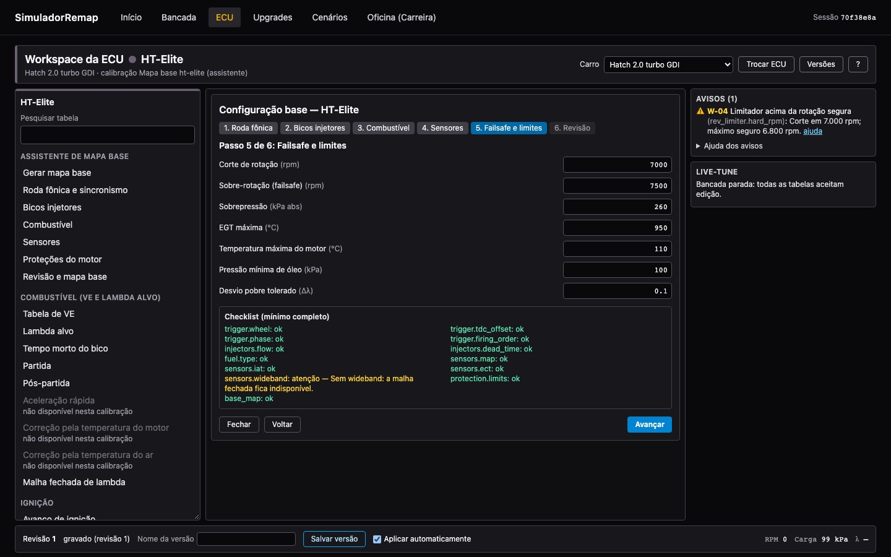
| Campo | Padrão | Limites |
|---|---|---|
| Corte de rotação | 7000 rpm | 2000–12000 |
| Sobre-rotação (failsafe) — tem de ser maior que o corte | 7500 rpm | 2000–13000 |
| Sobrepressão | 260 kPa abs. | 100–500 |
| EGT máxima | 950 °C | 600–1100 |
| Temperatura máxima do motor | 110 °C | 80–130 |
| Pressão mínima de óleo | 100 kPa | 0–600 |
| Desvio pobre tolerado | Δλ 0,10 | 0,03–0,30 |
Estes valores preenchem os limiares do failsafe, o limitador de rotação e a sobrepressão do boost.
Passo 6: Revisão
- Confira o resumo.
- MAP máximo do mapa base (kPa abs., padrão 200).
- Marcha lenta alvo (rpm, padrão 900). O corte tem de ficar 500 rpm acima.
- Tamanho da grade: 12×12, 16×16 ou 20×20.
- Clique em Gravar e gerar mapa base.
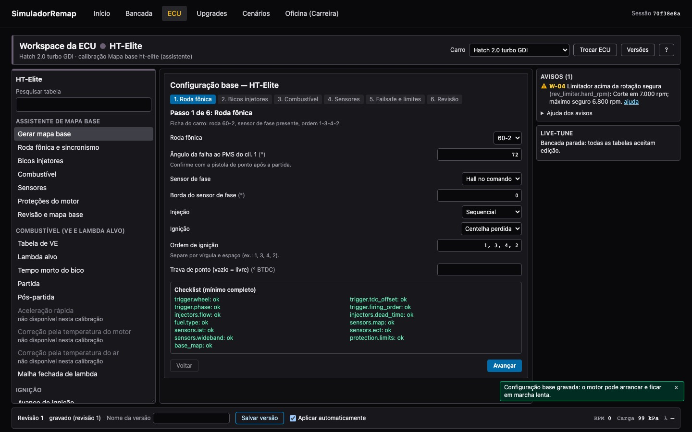
O mapa base é intencionalmente impreciso. Afine a VE e o avanço na bancada. Two-step, antilag, powershift e pops começam desligados.
Tabelas: o que cada uma faz
TodosO nome de uma tabela muda com o perfil de ECU. A coluna "Live" indica se a tabela aceita edição durante a puxada.
7.1Tabelas comuns às standalones
| Tabela | Eixos | Unidade e limites | Live | O que controla |
|---|---|---|---|---|
| VE (Tabela de VE, Eficiência do motor, Mapa principal (VE)) | RPM × MAP | % · 0–150 | Sim | Quanto ar entra em cada cilindro. A ECU calcula o combustível a partir dela. |
| Mapa principal (ms) (FT-Pro) | RPM × MAP | ms · 0–50 | Sim | Tempo de abertura do bico, definido de forma direta. |
| Lambda alvo | RPM × MAP | λ · 0,65–1,30 | Sim | Mistura desejada. 1,0 = estequiométrica. Menor = mais rica. |
| Avanço de ignição | RPM × MAP | °BTDC · −20 a 60 | Sim | Ponto da faísca. |
| Avanço cil. N | RPM × MAP | ° · ±15 | Sim | Correção de avanço de um cilindro. |
| Combustível cil. N | RPM × MAP | % · ±25 | Sim | Correção de combustível de um cilindro. |
| Correção pela temperatura do ar / do motor (ignição) | IAT ou ECT | ° · −15 a 10 | Sim | Muda o avanço conforme a temperatura. |
| Mistura pela temperatura do motor | ECT | % · −20 a 100 | Não | Enriquece o motor frio. |
| Mistura pela temperatura do ar | IAT | % · ±30 | Não | Corrige o combustível pela temperatura do ar. |
| Aceleração rápida / Transiente | Taxa do TPS | % · 0–200 | Não | Combustível extra quando o acelerador abre depressa. |
| Partida | ECT | ms · 0–50 | Não | Pulso de injeção durante a partida. |
| Pós-partida | ECT | % · 0–100 | Não | Combustível extra logo depois da partida. |
| Tempo morto do bico | Tensão da bateria | ms · 0–5 | Não | Atraso de abertura do bico, somado a cada pulso. |
| Pressão alvo | RPM × TPS | kPa · 80–400 | Sim | Pressão do turbo desejada. |
| Pressão máxima por marcha | Marcha | kPa · 80–400 | Sim | Teto de pressão em cada marcha. Exige Alvo por marcha. |
| Duty base da wastegate | RPM × pressão alvo | % · 0–100 | Não | Abertura inicial da válvula de controle da wastegate. |
| Limiar de detonação | RPM | 0–1 | Não | Intensidade de knock que conta como evento. |
| Pressão mínima de óleo | RPM | kPa · 0–1000 | Não | Limiar do failsafe de pressão de óleo. |
| Comando de admissão / escape alvo | RPM × MAP | ° · ±60 | Sim | Posição alvo dos comandos variáveis (VVT). |
| Avanço adicional por etanol | % de etanol | ° · −10 a 15 | Sim | Avanço extra com sensor Flex. |
| Pressão adicional por etanol | % de etanol | kPa · −50 a 100 | Sim | Pressão extra com sensor Flex. Sem sensor, não muda nada. |
7.2Tabelas exclusivas do OEM-Stage
| Tabela | Eixos | Unidade | Live | O que controla |
|---|---|---|---|---|
| Pedido de torque do pedal | RPM × pedal | N·m · 0–1500 | Sim | Torque que o motorista pede com o pedal. |
| Limite por rotação | RPM | N·m · 0–1500 | Sim | Teto de torque por rotação. |
| Limite por marcha | Marcha | N·m · 0–1500 | Sim | Teto de torque por marcha. |
| Avanço base | RPM × carga | °BTDC · −20 a 60 | Sim | Avanço de ignição. |
| Avanço ótimo | RPM × carga | °BTDC | Sim | Avanço de melhor torque (MBT). Referência para a intervenção de torque. |
| Eficiência de ignição | Atraso 0–45° | 0–1 | Não | Fração de torque que fica para cada grau de atraso. Não pode subir. |
| Torque ótimo por carga | RPM × carga | N·m · 0–1500 | Não | Torque com avanço ótimo em cada carga. Tem de subir com a carga. |
| Pressão alvo | RPM × carga | kPa · 80–400 | Sim | Pressão do turbo para chegar à carga alvo. |
| Lambda de proteção | EGT | λ | Sim | Limite rico para proteger o escape quando a EGT sobe. |
| Correção pela temperatura do ar | IAT | ° | Sim | Muda o avanço com a temperatura do ar. |
Estratégias: o que cada uma faz
TodosUma estratégia é uma função lógica da ECU. Abra-a no navegador. Altere os campos. Clique em Gravar estratégia. Cada formulário tem a caixa Ativa.
Ordem de prioridade: failsafe > limitador de rotação > two-step, antilag e powershift > overrun > funcionamento normal.
8.1Malha fechada (lambda)
Corrige o combustível em tempo real. Compara a leitura da wideband com o Lambda alvo. A correção de longo prazo aprende por célula e reinicia em cada sessão.
Campos principais: Ganho proporcional (0,5), Ganho integral (2/s), Limite de correção (25 %), Temperatura mínima do motor (60 °C), Rotação mínima / máxima, MAP máximo, Atraso após a partida (10 s), Correção de longo prazo.
8.2Controle de detonação
Atua por cilindro. Cada evento acima do Limiar de detonação atrasa a ignição um passo. Depois de uma espera, o avanço volta devagar. Se o atraso máximo dura muito, a ECU baixa o boost.
Campos: Passo de atraso (2°), Atraso máximo (8°), Espera antes de recuperar (0,5 s), Taxa de recuperação (1°/s), Rotação mínima (1500), MAP mínimo (80 kPa), Redução de boost no atraso máximo (20 kPa), Tempo no atraso máximo (2 s).
8.3Controle de boost (PID e por marcha)
Calcula a abertura da wastegate. O alvo vem da Pressão alvo. O duty é o Duty base da wastegate mais a correção PID. 0 % deixa a wastegate na mola. 100 % fecha-a.
- Modo: Malha aberta (duty base) ou Malha fechada (PID).
- PID: Kp, Ki, Kd, Filtro do termo D, Janela de ativação do PID, Limite do integrador.
- Alvo por marcha: liga a tabela Pressão máxima por marcha.
- Sobrepressão (corte) (260 kPa), Tempo de sobrepressão, Histerese da sobrepressão.
- Ação na sobrepressão: Abrir a wastegate, Corte de combustível ou Corte de ignição.
8.4Limitador de rotação
Protege o motor contra rotação excessiva. Perto do limite, a fase suave atrasa a ignição. No limite, a fase dura corta todos os cilindros. O corte termina abaixo de limite − histerese.
Campos: Corte (rpm) (7000), Tipo de corte (Corte de combustível, Corte de ignição, Corte rotativo), Limitador suave, Janela suave (200 rpm), Atraso máximo na janela suave (10°), Histerese (100 rpm).
8.5Two-step (largada)
Controle de largada. Com o carro parado e o acelerador a fundo, a ECU segura uma rotação fixa. Ela atrasa a ignição e enriquece a mistura para encher o turbo. Um tempo máximo protege o motor.
Campos: Rotação de largada (4000), Tipo de corte, Avanço na largada (−5°), Lambda alvo (0,85), Ativação (Embreagem ou Botão de largada), Velocidade máxima (5 km/h), Borboleta mínima (80 %), Tempo máximo ativo (10 s), Rampa de saída (0,2 s).
8.6Antilag
Mantém o turbo a girar com o acelerador fechado. Usa atraso forte, mistura rica, uma válvula de ar e corte parcial de cilindros. Desliga com EGT alta ou por tempo. Depois, espera o arrefecimento.
Campos: Ativação (Botão ou Rolante (entre rotações)), Rotação mínima / máxima, Borboleta máxima (20 %), Avanço (−15°), Lambda alvo (0,80), Válvula de ar (15 %), Tipo de corte, Fração de corte (0,25), EGT máxima (1000 °C), Tempo máximo ativo (3 s), Arrefecimento (5 s).
O antilag aquece muito o escape e a turbina. Observe a EGT. Uma fusão da turbina destrói o motor.
8.7Powershift (troca sem tirar o pé)
Permite trocar de marcha com o acelerador a fundo. No pedido de troca, a ECU corta todos os cilindros durante um tempo curto. Depois, devolve o avanço numa rampa.
Campos: Gatilho (Pedido de troca ou Embreagem), Borboleta mínima (80 %), Rotação mínima (3000), Tipo de corte, Tempo de corte (120 ms), Atraso na retomada (5°), Rampa de retomada (0,15 s).
8.8Overrun / pops & bangs
Atua com o pedal fechado. O DFCO corta o combustível na desaceleração. Os pops, opcionais, usam ignição muito atrasada e mistura rica. O combustível queima no escape e faz estalos.
- DFCO: Corte em desaceleração (DFCO), borboleta máxima (2 %), rotação mínima (1500), rotação de retomada (1200), atraso (0,5 s).
- Pops: Pops & bangs, rotação mínima / máxima (2500 / 6500), borboleta máxima (5 %), Janela de corte atrasado (1,5 s), Avanço (negativo = ATDC) (−15°), Lambda alvo (0,9), Intensidade (60 %), Duração máxima (2 s), EGT máxima pré-turbina (950 °C).
- Catalisador presente: com catalisador, a intensidade fica até 30 % e a duração até 0,5 s.
8.9Failsafe (proteções)
Uma tabela de regras de proteção. Uma regra dispara quando a condição dura o tempo de confirmação. A regra aplica as ações. A regra liberta depois do tempo de liberação.
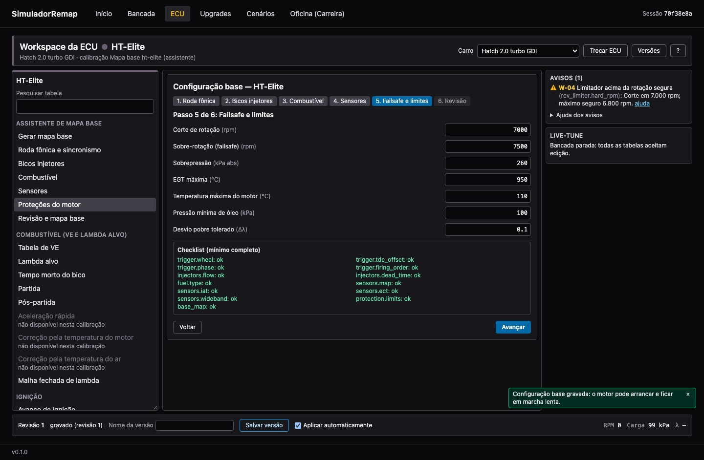
| Regra padrão | Disparo | Ações |
|---|---|---|
| EGT alta | EGT máxima | Reduzir boost 30 kPa. Enriquecer. |
| EGT crítica | EGT máxima + 30 °C | Cortar boost. Baixar limitador para 4000 rpm. |
| Pobre em carga | Δλ 0,10 acima de 150 kPa | Cortar boost. |
| Motor quente | 110 °C | Baixar limitador para 4500 rpm. Reduzir boost. |
| Pressão de óleo baixa | Abaixo da tabela de óleo | Cortar combustível. Liberta só com o motor parado. |
| Sobre-rotação | RPM de sobre-rotação | Cortar combustível. |
| Falha de sensor | Sensor fora da faixa | Cortar boost. Limitar a 3000 rpm. |
Use Acrescentar regra e Remover para alterar a lista. A coluna Valor da ação vale só para a primeira ação com parâmetro.
8.10Comando variável (VVT)
Os comandos seguem as tabelas Comando de admissão alvo e Comando de escape alvo. Abaixo de 40 °C de ECT, os comandos ficam na posição 0. Edite as tabelas. O item Controle do comando variável não tem formulário nesta versão.
Peças e combustíveis
Todos9.1Peças
Escolha as peças na tela Início, antes de criar a sessão. Para mudar as peças numa sessão ativa, use Upgrades.
| Categoria | Opção | Efeito |
|---|---|---|
| Turbina | Turbina upgraded (Stage 1) | Área da turbina ×1,25 · vazão do compressor ×1,3 · inércia ×1,45 (mais lag) |
| Turbina Stage 2 | Área ×1,45 · vazão ×1,6 · inércia ×1,9 · wastegate ×1,15 | |
| Turbina Stage 3 | Área ×1,7 · vazão ×2 · inércia ×2,6 · wastegate ×1,3 | |
| Bicos injetores | Bicos de alta vazão | Vazão ×1,5 |
| Bomba de combustível | Bomba de alta vazão | Capacidade ×1,8 |
| Intercooler | Intercooler esportivo | Efetividade +0,08 |
| Downpipe | Downpipe de alto fluxo | Contrapressão do escape ×0,6 |
| Internos do motor | Internos forjados | Biela ×1,35 · pressão no cilindro ×1,25 · pistão +40 °C |
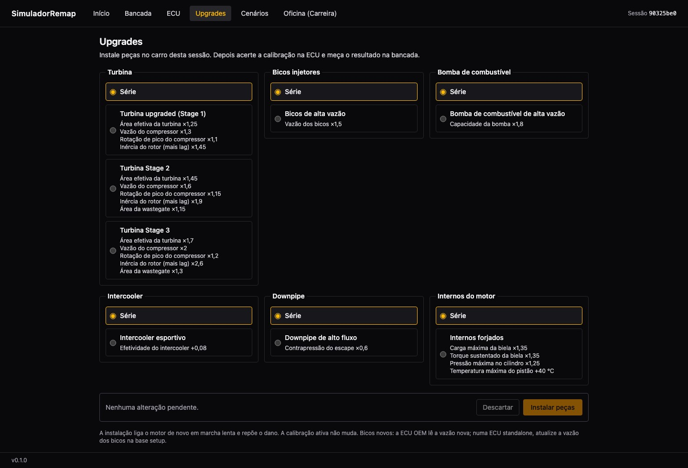
Instalar peças numa sessão
- Aguarde o fim de qualquer puxada.
- Clique em Upgrades.
- Selecione as peças novas. Leia a lista Alterações pendentes.
- Clique em Instalar peças. Para cancelar, clique em Descartar.
- Clique em Acertar na ECU para ajustar a calibração.
- Clique em Medir na bancada para medir o ganho.
A calibração não muda com as peças. Uma turbina maior com a mesma calibração pode deixar a mistura pobre. Numa standalone, declare a vazão dos bicos novos no assistente.
A instalação põe o motor em marcha lenta e repõe o dano. Numa tentativa de cenário, as peças são fixas.
9.2Combustíveis
| Combustível | AFR estequiométrico | RON | Etanol |
|---|---|---|---|
| Gasolina pura (E0) | 14,7 | 95 | 0 % |
| Gasolina comum (E27) | 13,2 | 94 | 28 % |
| Etanol hidratado (E100) | 9,0 | 109 | 100 % |
| Gasolina de competição (Podium) | 14,4 | 102 | 0 % |
Mais octanas dão mais margem contra knock. O E100 precisa de muito mais combustível em massa. Por isso, calibre em lambda e não em AFR.
Flex Fuel
Marque Flex Fuel e mova Teor de etanol (E27 a E100). Só o Clássico 2.0 turbo de swap aceita Flex Fuel. Use as tabelas Avanço adicional por etanol e Pressão adicional por etanol.
Cenários de treino
Aluno10.1Criar o perfil de aluno
O perfil guarda as tentativas e a carreira. Não tem senha. Não guarda dados pessoais.
- Clique em Cenários. Depois, clique em Perfis.
- Clique em Novo perfil.
- Escreva o Nickname: 3 a 24 caracteres. Use letras, números, "-" ou "_". Não use espaços nem "@".
- Em Papel, selecione Aluno.
- Clique em Criar perfil. O perfil fica ativo.
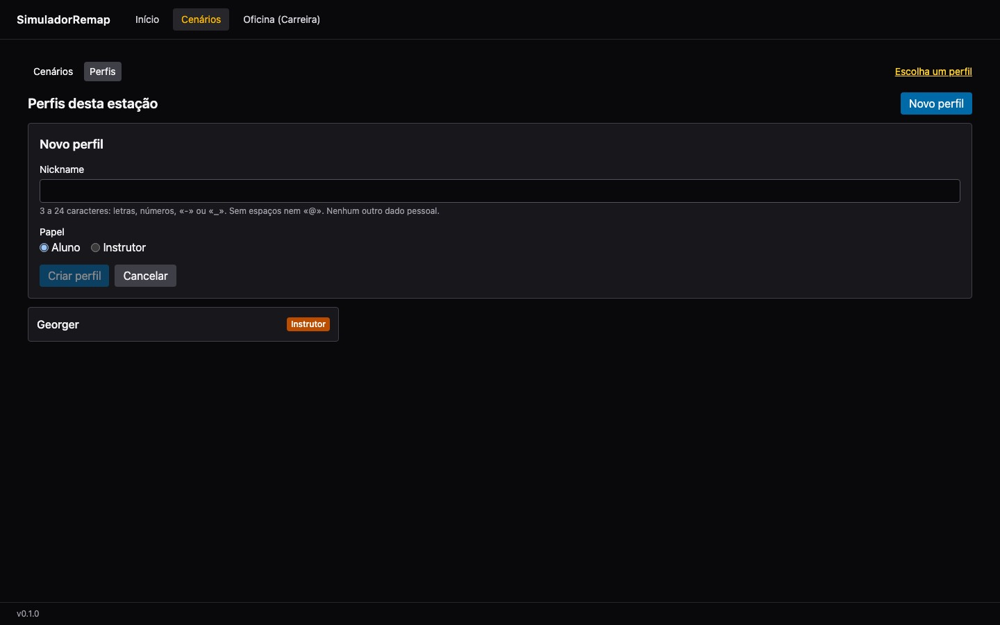
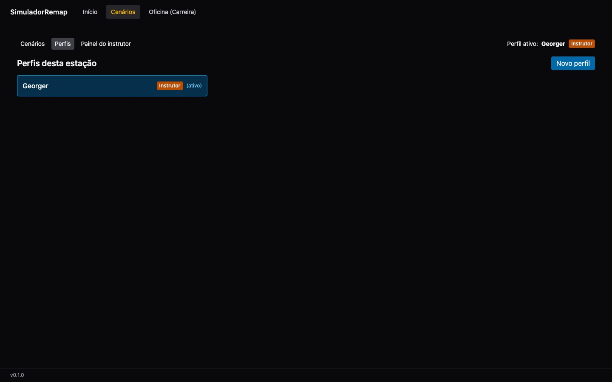
O navegador guarda o perfil ativo. Numa estação partilhada, confirme o perfil em Perfil ativo antes de começar.
10.2Escolher um cenário
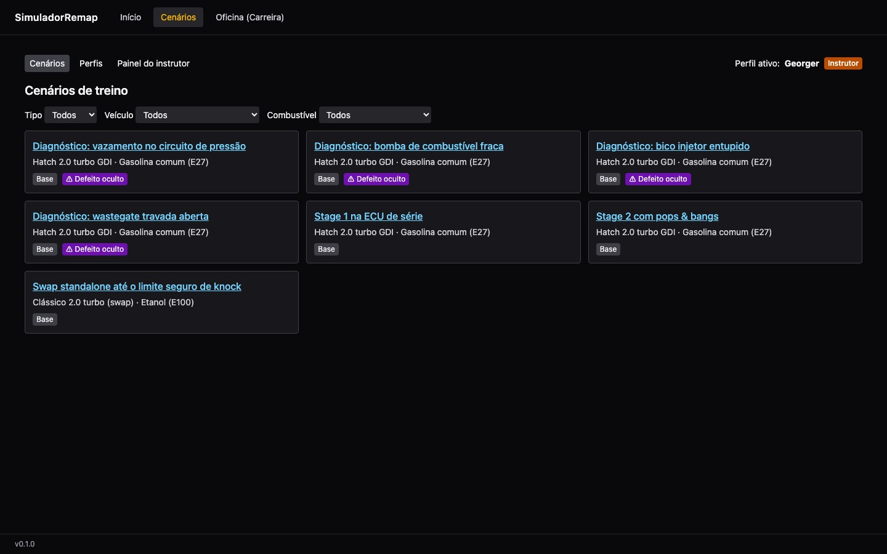
- Base: cenário incluído no sistema. Desafio: cenário criado pelo instrutor.
- ⚠ Defeito oculto: o carro tem uma avaria. Descubra-a.
- ✓ Aprovado / ✗ Reprovado: resultado da última avaliação.
| Cenário | Carro · combustível | Objetivo principal |
|---|---|---|
| Stage 1 na ECU de série | Hatch · E27 | +40 whp sobre a puxada base. Knock ≤ 3°, EGT ≤ 950 °C, λ 0,75–0,90. |
| Stage 2 com pops & bangs | Hatch · E27 | +65 whp e pelo menos 5 pops por puxada. EGT no overrun ≤ 950 °C. |
| Swap standalone até o limite seguro de knock | Clássico · E100 | Trocar para standalone. ≥ 300 whp. Margem de knock ≥ 2°. 3 puxadas válidas. |
| Diagnóstico: bomba de combustível fraca | Hatch · E27 | Identificar a bomba fraca e acertar com segurança. |
| Diagnóstico: vazamento no circuito de pressão | Hatch · E27 | Identificar o vazamento. ≥ 200 whp. |
| Diagnóstico: bico injetor entupido | Hatch · E27 | Identificar o cilindro pobre. |
| Diagnóstico: wastegate travada aberta | Hatch · E27 | Identificar a wastegate presa. Só aparece se a estação ativar este cenário. |
10.3Ler o briefing
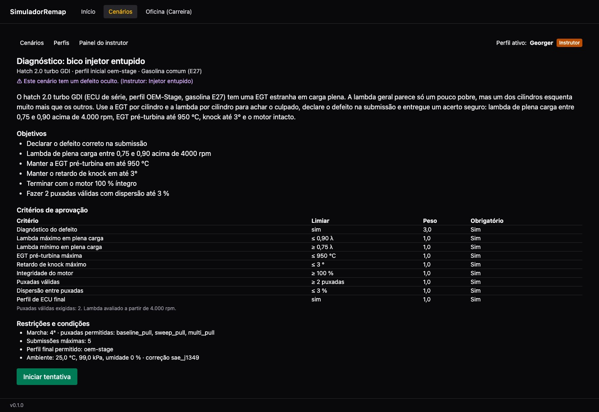
- Clique no título do cenário.
- Leia o texto do cliente. Ele descreve o problema.
- Leia os Critérios de aprovação. Todos os critérios obrigatórios têm de passar.
- Leia as Restrições e condições: marcha, tipos de puxada, submissões máximas e perfil de ECU final.
- Clique em Iniciar tentativa.
10.4Fazer a tentativa
O sistema clona a calibração, cria a sessão e executa uma puxada base automática. Aguarde o estado Em curso.
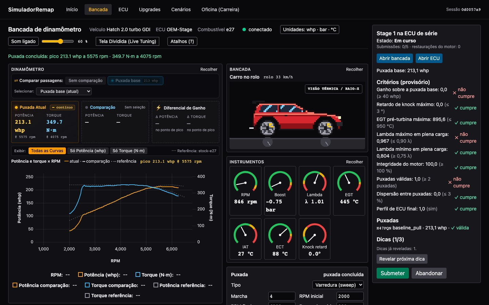
- Leia a Puxada base. É o ponto de partida.
- Clique em Abrir ECU. Altere a calibração.
- Clique em Abrir bancada. Execute uma puxada de um tipo permitido.
- Leia os Critérios (provisório). Cada linha diz ✓ cumpre ou ✗ não cumpre.
- Leia a lista Puxadas. Cada puxada é ✓ válida ou ✗ inválida com o motivo.
- Repita até todos os critérios cumprirem.
- Faça o número de puxadas válidas pedido com a calibração final.
- Num cenário com defeito oculto, selecione o defeito em Defeito diagnosticado.
- Clique em Submeter.
Uma puxada só conta se a calibração não mudar durante ela. Não altere a ECU com uma puxada em curso. Não altere a ECU entre as puxadas válidas e a submissão.
Motivos de puxada inválida
| Motivo | Causa |
|---|---|
| Puxada não concluída / motor falhou | A puxada foi abortada ou o motor quebrou. |
| Tipo de puxada não permitido | O cenário não aceita este tipo. |
| Calibração alterada durante a puxada | Houve uma edição com a puxada em curso. |
| Calibração diferente da submetida | A calibração mudou depois da puxada. |
| Condições da sessão diferentes | Combustível ou ambiente diferentes do cenário. |
| RPM final baixa | A puxada parou antes de corte − 500 rpm. |
| Marcha errada | A marcha não é a do cenário. |
| Perfil de ECU não permitido | A ECU instalada não é a pedida. |
10.5Dicas
Clique em Revelar próxima dica. As dicas aparecem por ordem. Algumas ficam bloqueadas até uma reprovação, um evento ou um tempo de simulação. Revelar uma dica não altera a nota. O resultado mostra quantas dicas revelou.
10.6Ler o resultado
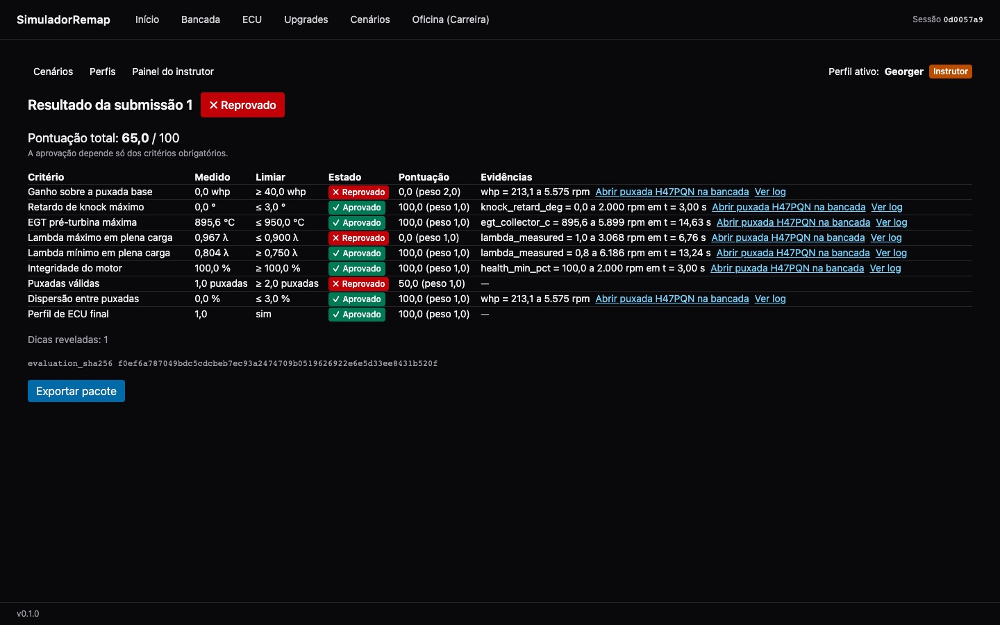
- ✓ Aprovado exige todos os critérios obrigatórios. A Pontuação total não decide a aprovação.
- Pontuação de um critério: 100 se cumpre. Se não cumpre, a pontuação baixa conforme a distância ao limiar.
- Clique em Abrir puxada … na bancada. A bancada abre o datalogger no instante da evidência.
- Clique em Ver log para ler o log JSON.
- Num cenário com defeito oculto, o resultado mostra o Defeito oculto revelado.
Repetir
Se reprovar e tiver submissões, a tentativa volta a Em curso. Corrija e submeta de novo. O máximo é 5 submissões nos cenários incluídos. Para começar do zero, abra o briefing e clique em Iniciar tentativa. A tentativa aberta fica abandonada.
Entregar ao instrutor
- No resultado, clique em Exportar pacote.
- Guarde o ficheiro
.simremap.json. - Entregue o ficheiro ao instrutor. Não edite o ficheiro.
O pacote tem uma assinatura SHA-256. Uma alteração ao ficheiro faz o instrutor recusar o pacote.
Painel do instrutor
InstrutorO painel cria desafios, importa os pacotes dos alunos e avalia a turma. Crie um perfil com o papel Instrutor (procedimento 10.1). A etiqueta Painel do instrutor só aparece com esse papel.
O papel não é um controle de segurança. Qualquer pessoa na estação pode criar um perfil de instrutor. Controle o acesso à estação.
11.1Diferenças para o instrutor
- O briefing mostra o defeito oculto: (Instrutor: defeito). O aluno só vê que existe um defeito.
- Só o instrutor cria desafios e importa pacotes de tentativas.
- Só o instrutor executa o replay de uma tentativa importada.
11.2Criar um desafio
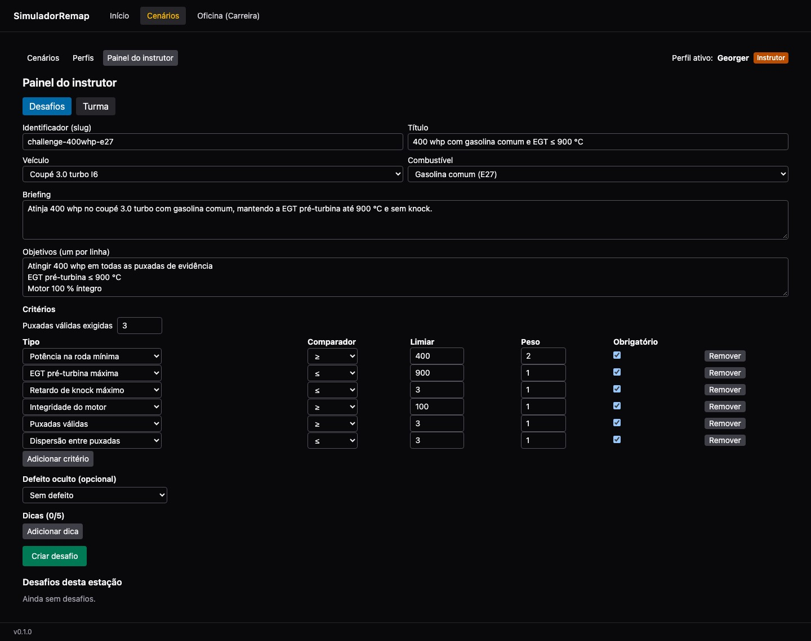
- Clique em Cenários e depois em Painel do instrutor.
- Na aba Desafios, escreva o Identificador (slug): minúsculas, números e hífen, 3 a 64 caracteres.
- Escreva o Título (3 a 80 caracteres).
- Selecione o Veículo e o Combustível. O combustível tem de ser aceite pelo carro.
- Escreva o Briefing (até 4000 caracteres). Descreva o cliente e o problema.
- Escreva os Objetivos, um por linha (1 a 10).
- Defina as Puxadas válidas exigidas (1 a 10).
- Ajuste os critérios. Use Adicionar critério e Remover.
- Se quiser, selecione um Defeito oculto e os parâmetros. Marque Exigir diagnóstico do defeito.
- Se quiser, adicione até 5 dicas. Em Após reprovações, defina quando a dica desbloqueia.
- Clique em Criar desafio. A mensagem é ✓ Desafio … criado.
Não use dois critérios do mesmo tipo. O sistema recusa o desafio. Cada tipo de critério aceita só um comparador.
Tipos de critério
| Critério | Comparador | Unidade | Como mede |
|---|---|---|---|
| Potência na roda mínima | ≥ | whp | Menor pico entre as puxadas de evidência |
| Ganho sobre a puxada base | ≥ | whp | Menor pico − puxada base |
| Torque mínimo | ≥ | N·m | Menor pico de torque |
| Retardo de knock máximo | ≤ | ° | Maior atraso por knock |
| Margem de knock (sonda) | ≥ | ° (0,5–6) | Uma puxada de teste com avanço extra tem de terminar sem knock |
| Integridade do motor | ≥ | % | Saúde mínima. Passa só sem falha. |
| EGT pré-turbina máxima | ≤ | °C | Maior EGT |
| EGT máxima no overrun | ≤ | °C | Maior EGT com overrun ativo |
| Lambda máximo / mínimo em plena carga | ≤ / ≥ | λ | Pedal ≥ 90 % e RPM acima da janela |
| Pops & bangs no coastdown | ≥ | eventos | Menor número por puxada |
| Puxadas válidas | ≥ | puxadas | Número de puxadas válidas |
| Dispersão entre puxadas | ≤ | % | 100 × (máx − mín) / média dos picos |
| Perfil de ECU final | sim/não | — | Todas as puxadas com um perfil permitido |
| Tabelas bloqueadas intactas | sim/não | — | As tabelas bloqueadas não mudaram |
| Diagnóstico do defeito | sim/não | — | O defeito declarado é igual ao defeito oculto |
Defeitos ocultos
| Defeito | Parâmetro | Sintoma típico |
|---|---|---|
| Bomba de combustível fraca | Vazão máxima (60–250 L/h) | Lambda empobrece em alta rotação. O duty dos bicos sobe sem enriquecer. |
| Injetor entupido | Cilindro e fator de vazão (0,5–0,95) | Um cilindro com EGT e lambda diferentes dos outros. |
| Sensor IAT descalibrado | Desvio (−30 a 30 °C) | Correções de temperatura erradas. |
| Wastegate travada | Posição travada (0–100 %) | A pressão não segue o alvo. O duty não muda nada. |
| Vazamento no circuito de pressão | Área (5–200 mm²) | Turbo mais rápido e wastegate mais fechada para a mesma pressão. |
O formulário não altera a marcha (4ª), os tipos de puxada, o máximo de submissões (5) nem o perfil de ECU final. Estes valores ficam no padrão.
11.3Distribuir um desafio
- Em Desafios desta estação, clique em Exportar desafio.
- Copie o ficheiro
.simremap.jsonpara cada estação de aluno. - Na estação do aluno, importe o desafio. Depois, o aluno faz a tentativa.
Importe o desafio na sua estação antes de importar as tentativas. Sem o desafio, o pacote é recusado com importe primeiro o desafio.
11.4Importar os pacotes da turma
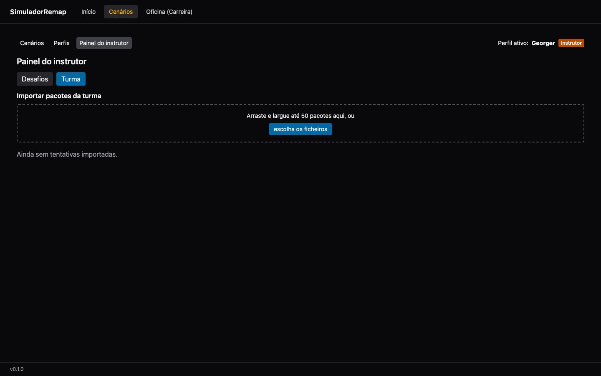
- Clique na aba Turma.
- Arraste até 50 pacotes para a área. Também pode clicar em escolha os ficheiros.
- Leia o estado de cada ficheiro: Na fila, A enviar…, Importado, Já importado ou Recusado.
- Para um ficheiro recusado, leia o motivo (tabela abaixo).
| Motivo | Ação |
|---|---|
| pacote adulterado ou corrompido | Peça ao aluno para exportar de novo. |
| cenário diferente do original | O aluno usou outra versão do desafio. Distribua a versão certa. |
| formato mais novo que esta versão | Atualize o SimuladorRemap desta estação. |
| ficheiro truncado ou não é JSON | Copie o ficheiro de novo. |
| conteúdo fora do formato / valores NaN ou Infinity | Peça um pacote novo. |
| acima de 64 MiB | Peça um pacote sem logs completos. |
| importe primeiro o desafio | Importe o desafio. Depois, importe a tentativa. |
A estação recalcula a nota com as evidências do pacote. Se a nota difere da do aluno, a linha mostra avaliação recalculada.
11.5Avaliação da turma e CSV
A tabela Avaliação da turma mostra a última submissão de cada tentativa importada.
- Filtre por Cenário e por Resultado (Aprovados, Reprovados).
- Clique num cabeçalho para ordenar.
- Avaliação divergente: ⚠ Sim (recalculada) indica uma nota diferente da do aluno. Investigue.
- Replay: executa de novo a tentativa para verificar. Estados: verificado, replay divergente, versão incompatível. O replay exige a mesma versão da aplicação.
- Para uma folha de cálculo em português, clique em Exportar CSV. O separador é ";" e a vírgula é decimal.
- Para outras ferramentas, clique em Exportar CSV (RFC 4180). O separador é ",".
Colunas: nickname, station, scenario_id, attempt_id, submission, passed, total_score, evaluation_mismatch, replay_status, package_sha256, imported_at. Com um filtro de cenário, o ficheiro tem também uma coluna score_… por critério.
11.6Laudo forense para o instrutor
O sistema gera o laudo em 3 níveis. A tela mostra só o nível iniciante.
| Nível | Conteúdo |
|---|---|
| Iniciante | Causa em linguagem simples. Até 3 ações. Exemplo: "Baixe o boost em 20 a 40 kPa." |
| Intermediário | Modo, mecanismo, avisos antecipados, cilindros com knock, tabelas afetadas e diferença de calibração. |
| Instrutor | Ciclo crítico, equações de autoignição (Douaud-Eyzat, Livengood-Wu), MAPO, cadeia causal e 4 perguntas para discussão em aula. |
Para obter o nível instrutor, peça ao responsável técnico a chamada GET /api/v1/runs/{id}/forensic-report?audience=instructor.
Oficina (Carreira)
AlunoNa carreira, a oficina aceita ordens de serviço de clientes. Cada ordem é um cenário. O resultado muda o saldo e a reputação. A carreira pertence ao perfil de jogador ativo.
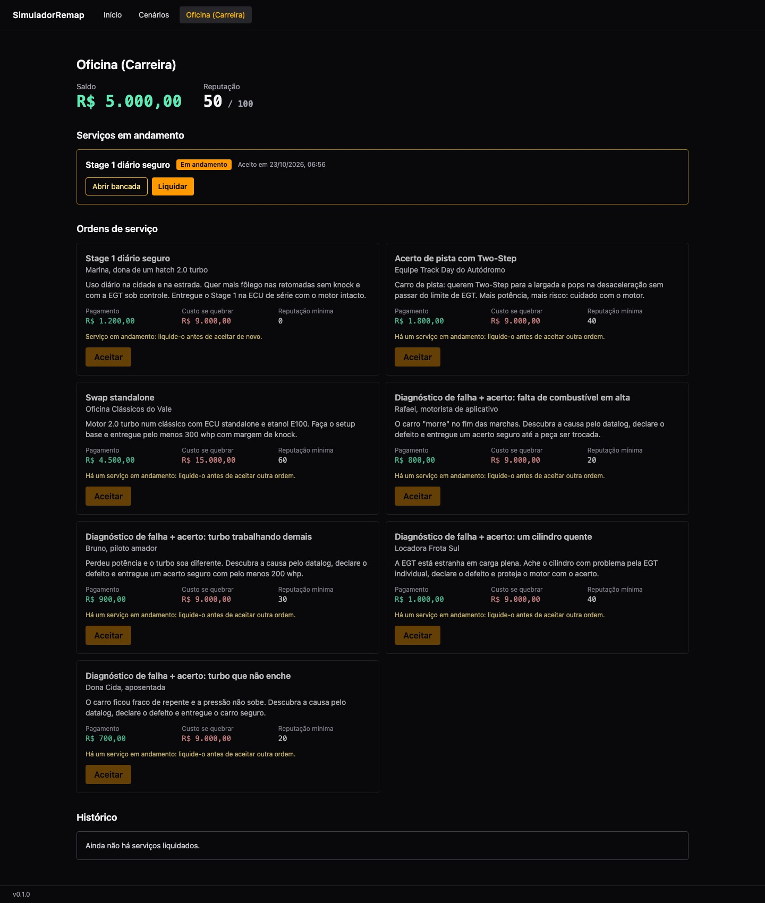
- Clique em Oficina (Carreira). Sem perfil, clique em Escolher perfil.
- Leia o Saldo e a Reputação. O início é R$ 5.000,00 e reputação 50.
- Em Ordens de serviço, leia o Pagamento, o Custo se quebrar e a Reputação mínima.
- Clique em Aceitar. A bancada abre.
- Faça a tentativa como no capítulo 10.
- Depois do resultado final, volte à oficina. Clique em Liquidar.
- Leia o resultado no Histórico.
| Ordem | Cliente | Cenário | Pagamento | Custo se quebrar | Reputação mín. |
|---|---|---|---|---|---|
| Stage 1 diário seguro | Marina | Stage 1 | R$ 1.200 | R$ 9.000 | 0 |
| Diagnóstico: turbo que não enche | Dona Cida | Wastegate travada | R$ 700 | R$ 9.000 | 20 |
| Diagnóstico: falta de combustível em alta | Rafael | Bomba fraca | R$ 800 | R$ 9.000 | 20 |
| Diagnóstico: turbo trabalhando demais | Bruno | Vazamento de pressão | R$ 900 | R$ 9.000 | 30 |
| Acerto de pista com Two-Step | Equipe Track Day | Stage 2 com pops | R$ 1.800 | R$ 9.000 | 40 |
| Diagnóstico: um cilindro quente | Locadora Frota Sul | Bico entupido | R$ 1.000 | R$ 9.000 | 40 |
| Swap standalone | Oficina Clássicos do Vale | Swap standalone | R$ 4.500 | R$ 15.000 | 60 |
| Resultado da liquidação | Saldo | Reputação |
|---|---|---|
| Pago (aprovado) | + pagamento | +5 |
| Reprovado (submissões esgotadas ou tempo expirado) | 0 | −5 |
| Motor quebrado (qualquer falha ou restauração) | pagamento se aprovado − custo do motor | −10 |
| Abandonado | 0 | −3 |
Na carreira, uma só restauração do motor conta como motor quebrado. O saldo pode ficar negativo. Trabalhe com margem de segurança.
A oficina aceita só um serviço de cada vez. Liquide o serviço aberto antes de aceitar outro. As peças não têm preço nesta versão.
Mensagens e soluções
Todos| Mensagem ou código | Causa | Solução |
|---|---|---|
| Servidor indisponível | O servidor não responde. | Clique em Tentar de novo. Peça para ligar o servidor. |
SIM_CAPACITY_EXCEEDED | Já existe uma sessão ativa. | Clique em Retomar sessão ativa ou Encerrar sessão ativa. |
| telemetria indisponível / reconectando | Ligação WebSocket perdida. | Aguarde. Clique em Tentar de novo. |
| Já existe uma puxada em curso | Uma puxada não terminou. | Aguarde ou clique em Abortar. |
| Motor destruído. Restaurar motor para continuar. | O motor quebrou. | Leia o laudo. Clique em Restaurar motor. |
ECU_SETUP_INCOMPLETE | A configuração base da standalone tem pendências. | Complete a checklist no assistente. |
| A calibração de série não pode ser alterada | A calibração é só de leitura. | Clique em Clonar e editar. |
| não gravado (bloqueada durante a puxada) | Tabela não live-tunable editada durante a puxada. | Aguarde o fim da puxada. Edite de novo. |
| Estratégia não suportada neste perfil. | O perfil não tem esta estratégia. | Troque de ECU. Consulte a tabela 5.1. |
| Exige o pacote race deste perfil. | M1-Race com pacote base. | Troque para M1-Race com o pacote race. |
| Quick Tune precisa de λ medido… | Sem dados de lambda da bancada. | Execute uma puxada ou carga estacionária primeiro. |
| Área de transferência indisponível | O navegador bloqueou a área de transferência. | Clique na grade. Use Ctrl+C / V. |
| Conflito de versão | Outra janela gravou a calibração. | Clique em Recarregar. |
| As peças desta tentativa de cenário são fixas. | Tentativa de cenário ativa. | Use uma sessão livre para testar peças. |
SUBMISSION_LIMIT_REACHED | Submissões esgotadas. | Inicie uma tentativa nova no briefing. |
| A sonda de knock falhou; submeta de novo | Falha da puxada de teste. | Submeta de novo. Esta submissão não conta. |
INSTRUCTOR_ROLE_REQUIRED | Função de instrutor com perfil de aluno. | Troque para um perfil de instrutor. |
| Requer reputação N | Reputação baixa para esta ordem. | Faça ordens mais simples primeiro. |
Limitações desta versão
InstrutorA versão 0.1.0 tem estas limitações conhecidas. Planeie as aulas com elas.
- O diálogo Trocar ECU não volta para o OEM-Stage. Para voltar ao OEM, crie uma sessão nova.
- M1-Race e HT-Elite não têm calibração de fábrica. Crie a sessão com OEM-Stage e use Trocar ECU. Só o Clássico 2.0 turbo aceita FT-Pro na criação da sessão.
- Na M1-Race, confirme o pacote race depois do assistente. Se as funções de competição forem recusadas, repita a troca.
- Não há formulário para o VVT, as flags de proteção do OEM, o modelo do bico da M1-Race nem o modo ms/VE da FT-Pro.
- A tela do laudo forense mostra só o nível iniciante.
- O formulário de desafio só desbloqueia dicas por reprovações. Não define marcha, tipos de puxada nem perfil final.
- Alguns motivos de puxada inválida aparecem como código interno, sem tradução.
- O resultado mostra o defeito oculto também ao aluno, depois da submissão.
- As estatísticas por cenário existem na API, mas não aparecem na tela.
Glossário
Todos- AFR
- Relação ar/combustível em massa. Depende do combustível.
- ATDC / BTDC
- Depois / antes do ponto morto superior. Avanço positivo é BTDC.
- Boost
- Pressão acima da atmosférica criada pelo turbo ou pelo compressor.
- DFCO
- Corte de combustível na desaceleração.
- Duty
- Percentagem de tempo em que uma válvula fica aberta.
- ECT
- Temperatura do líquido de arrefecimento do motor.
- EGT
- Temperatura dos gases de escape, antes da turbina.
- Failsafe
- Proteção automática da ECU quando um limite é ultrapassado.
- IAT
- Temperatura do ar de admissão.
- Knock (detonação)
- Combustão espontânea fora de tempo. Danifica pistões e bielas.
- Lambda (λ)
- Mistura real dividida pela estequiométrica. 1,0 é ideal. Abaixo de 1 é rica.
- Live-tunable
- Tabela que aceita edição durante a puxada.
- MAP
- Pressão absoluta no coletor de admissão (kPa).
- MBT
- Avanço de ignição de melhor torque.
- OEM
- ECU original de fábrica.
- PMS
- Ponto morto superior do pistão.
- Standalone
- ECU programável que substitui a original.
- TPS
- Posição da borboleta do acelerador.
- VE
- Eficiência volumétrica. Percentagem de enchimento do cilindro.
- VVT
- Comando de válvulas variável.
- Wastegate
- Válvula que desvia o escape da turbina e limita a pressão.
- Wideband
- Sonda lambda de banda larga. Mede a mistura em toda a faixa.
- whp
- Potência medida na roda, em cavalos.
Manual do SimuladorRemap · v0.1.0 · Edição 1 · Outubro de 2026 · Capturas feitas na aplicação em funcionamento.